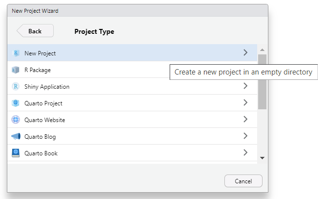
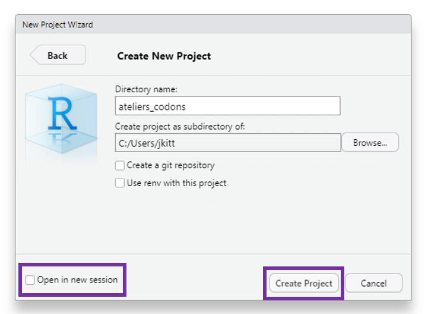
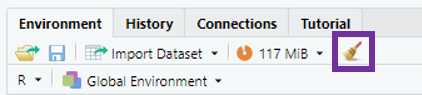
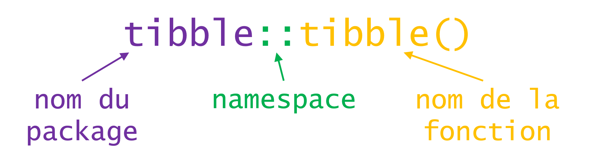
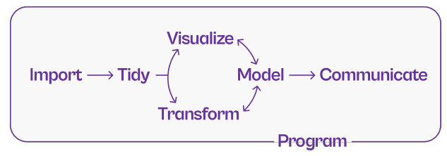
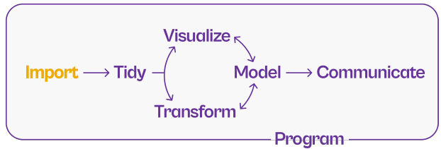

Introduction
Qu’est-ce que R ?
R est un langage de programmation et un logiciel utilisé pour réaliser des calculs statistiques et des graphiques.
R a été conçu en 1992 par Ross Ihaka et Robert Gentleman comme implémentation open source du langage de programmation S et publié en 1995.
Depuis, les utilisations de R se sont largement diversifiées :
analyses statistiques et workflows de data science
visualisations graphiques avancées
rapports automatisés
applications web
diaporamas, livres, et pages web
Pourquoi (pas) R ?
Avantages :
libre, open source, et plateforme indépendant
large variété d’extensions proposant des fonctionnalités supplémentaires
compatible avec d’autres langages de programmation
puissant pour l’analyse et la visualisation de données
très large communauté en ligne
souvent expérimenté comme étant simple à coder (pour un novice)
Pourquoi (pas) R ?
Inconvénients :
performance : évolutivité, mémoire et vitesse
courbe d’apprentissage importante
potentiels problèmes de sécurité (applications web)
souvent expérimenté comme étant étrange à coder (pour un expert)
R versus RStudio
Inspiré de Modern Drive
RStudio est un environnement de développement intégré (IDE) open source
IDE pour R le plus populaire depuis plusieurs années
de nombreuses fonctionnalités et extensions pour faciliter les workflows (suivi de version, sommaire, add-ins, …)
projets R et RMarkdown/Quarto
Mise en pratique : installer R et RStudio
Télécharger et installer R depuis
Télécharger et installer RStudio Desktop depuis
Console et script
La console vous permet de taper du code et de l’exécuter.
le code tapé dans la console sera perdu quand vous quitterez R …
… ce qui est problématique pour sauvegarder et partager votre code !
- Un script, à la manière d’un document texte, vous permet de sauvegarder votre code et de le partager.
Dans la console, le code est tapé à la suite de l’invite de commande
>.La console affiche la sortie (le résultat) du code à la ligne suivante (débute par
[1]).Le code exécuté à partir d’un script s’affiche dans la console.
Mise en pratique : console et script
Ouvrez R, tapez les commandes suivantes et appuyez sur
Entréepour les exécuter :"Ceci est du texte"2 + 2
Ouvrez RStudio
Ouvrez un script (
File > New File > RScript)Ajoutez les deux commandes ci-dessus et exécutez-les en plaçant le curseur à la fin de la première ligne et en cliquant sur
Run(ou en utilisant le raccourci clavierCtrl + Entrée)Sauvegardez le script (
Ctrl + S)
Les commentaires
Les commentaires servent à :
inactiver du code qu’on ne souhaite plus exécuter
ajouter des commentaires pour expliquer notre raisonnement
Dans R, les commentaires sont codés par un hash #.
Tout ce qui suit sur la même ligne ne sera pas traité comme du code.
Par convention, nous utilisons :
#pour commenter du code##pour ajouter des commentaires :
Les commentaires
Prenez dès maintenant l’habitude de commenter vos scripts.
Cela les rendra plus compréhensibles - pour vous et pour vos collègues !
Les commentaires peuvent vous servir à créer un en-tête (quoi ? qui ? quand ?)
Les commentaires servent également à structurer un script et à afficher une table des matières, en ajoutant quatre tirets - après un titre :
Mise en pratique : commenter un script
- Ouvrez un nouveau script et renseignez les informations essentielles (quoi ? qui ? quand ?)
- Ajoutez deux titres de sections
Mise en pratique : commenter un script
- Ouvrez un nouveau script et renseignez les informations essentielles (quoi ? qui ? quand ?)
- Ajouter deux titres de sections
Mise en pratique : paramètres de RStudio
Cliquez sur
Help > Cheatsheets > RStudio IDE Cheat Sheetet parcourez le document qui s’ouvre.Cliquez sur
View > Panes > Pane Layoutet arrangez les panneaux selon votre préférence.Cliquez sur
Tools > Global Optionset parcourez les différents éléments.
Organiser son travail
Les projets R
Les projets R (ou projets RStudio) vous fournissent un workflow robuste qui vous servira par la suite :
ils reposent sur l’idée que tous les fichiers associés à votre projet devraient être stockés dans le même dossier
aide à (re)trouver les fichiers
augmente la reproductibilité
facilite la collaboration
le répertoire de travail est défini dans le dossier où se trouve le fichier
.Rprojle répertoire de travail est clairement défini
indépendant des paramètres du système d’opération et de l’arborescence des dossiers (propre à chaque utilisateur)
limite les changements de répertoire lors de collaborations
Mise en pratique : créer un projet
Pour créer un projet R : File > New Project …
Mise en pratique : créer un projet


Arborescence
Une bonne organisation de vos fichiers avec une bonne structure de vos dossiers vous évitera de perdre du temps à chercher des fichiers.
La structure proposée ci-dessous est applicable à une bonne partie des projets :
📂Données brutes : données que vous récupérez au début du projet
📂Données modifiées : données générées en cours d’analyse
📂Scripts : code utilisé pour l’analyse, pour générer les figures, rédiger des rapports
📂Résultats : tableaux ou fichiers de résultats intermédiaires / finaux
📂Figures : figures générées en cours d’analyse et pour présenter les résultats
📂Documents : rapports, présentations, articles, documentation
Mise en pratique : créer une arborescence
- Cliquez sur
New Folderpour ajouter des dossiers dans votre répertoire de travail
- Créez l’arborescence qui vous semble la mieux adaptée (pensez à utiliser des nombres quand vous nommez vos dossiers pour conserver l’ordre)
Mise en pratique : créer une arborescence
- Cliquez sur
New Folderpour ajouter des dossiers dans votre répertoire de travail
- Créez l’arborescence qui vous semble la mieux adaptée (pensez à utiliser des nombres quand vous nommez vos dossiers pour conserver l’ordre)
Valeurs
Valeurs
Tapez et exécutez les commandes suivantes :
1
"Ceci est du texte"
"2023-09-11 14:00:00"
x
"x"
pi
Valeurs
[1] 1[1] "Ceci est du texte"[1] "2023-09-11 14:00:00"Error in eval(expr, envir, enclos): objet 'x' introuvable[1] "x"[1] 3.141593💡R est un langage orienté objet : tous les élements que vous manipulez dans R (données, fonctions, …) sont stockés dans des objets.
Fonctions
Mise en pratique : opérations arithmétiques
Tapez et exécutez
2 + 3.Essayez d’autres opérateurs de calcul :
-,*,/, ou^.Calculez la racine carrée de 25 :
sqrt(x = 25).
❓Quelle est la différence entre les deux valeurs 5 obtenues ?
R est un calculateur !
Fonctions
Fonctions
Fonctions
R possède une large collection de fonctions intégrées qu’on utilise comme ceci :
Nous avons déjà vu certaines fonctions dans les exercices précédents :
+, -, *, ^, sqrt(), log() sont toutes des fonctions.
Fonctions
Fonctions infixes
Opérateur unaire (fonction à un seul argument)
Opérateur binaire (fonction à deux arguments)
Corps d’une fonction
function (x, base = exp(1)) .Primitive("log")function (x, ...)
UseMethod("mean")
<bytecode: 0x000001e1d6eb5b58>
<environment: namespace:base>[1] mean.Date* mean.default* mean.difftime* mean.POSIXct* mean.POSIXlt*
[6] mean.quosure*
see '?methods' for accessing help and source codefunction (e1, e2) .Primitive("+")function (file, header = TRUE, sep = ",", quote = "\"", dec = ".",
fill = TRUE, comment.char = "", ...)
read.table(file = file, header = header, sep = sep, quote = quote,
dec = dec, fill = fill, comment.char = comment.char, ...)
<bytecode: 0x000001e1da442940>
<environment: namespace:utils>Corps d’une fonction
function (file, header = FALSE, sep = "", quote = "\"'", dec = ".",
numerals = c("allow.loss", "warn.loss", "no.loss"), row.names,
col.names, as.is = !stringsAsFactors, tryLogical = TRUE,
na.strings = "NA", colClasses = NA, nrows = -1, skip = 0,
check.names = TRUE, fill = !blank.lines.skip, strip.white = FALSE,
blank.lines.skip = TRUE, comment.char = "#", allowEscapes = FALSE,
flush = FALSE, stringsAsFactors = FALSE, fileEncoding = "",
encoding = "unknown", text, skipNul = FALSE)
{
if (missing(file) && !missing(text)) {
file <- textConnection(text, encoding = "UTF-8")
encoding <- "UTF-8"
on.exit(close(file))
}
if (is.character(file)) {
file <- if (nzchar(fileEncoding))
file(file, "rt", encoding = fileEncoding)
else file(file, "rt")
on.exit(close(file))
}
if (!inherits(file, "connection"))
stop("'file' must be a character string or connection")
if (!isOpen(file, "rt")) {
open(file, "rt")
on.exit(close(file))
}
pbEncoding <- if (encoding %in% c("", "bytes", "UTF-8"))
encoding
else "bytes"
numerals <- match.arg(numerals)
if (skip > 0L)
readLines(file, skip)
nlines <- n0lines <- if (nrows < 0L)
5
else min(5L, (header + nrows))
lines <- .External(C_readtablehead, file, nlines, comment.char,
blank.lines.skip, quote, sep, skipNul)
if (encoding %in% c("UTF-8", "latin1"))
Encoding(lines) <- encoding
nlines <- length(lines)
if (!nlines) {
if (missing(col.names))
stop("no lines available in input")
rlabp <- FALSE
cols <- length(col.names)
}
else {
if (all(!nzchar(lines)))
stop("empty beginning of file")
if (nlines < n0lines && file == 0L) {
pushBack(c(lines, lines, ""), file, encoding = pbEncoding)
on.exit((clearPushBack(stdin())))
}
else pushBack(c(lines, lines), file, encoding = pbEncoding)
first <- scan(file, what = "", sep = sep, quote = quote,
nlines = 1, quiet = TRUE, skip = 0, strip.white = TRUE,
blank.lines.skip = blank.lines.skip, na.strings = character(0),
comment.char = comment.char, allowEscapes = allowEscapes,
encoding = encoding, skipNul = skipNul)
col1 <- if (missing(col.names))
length(first)
else length(col.names)
col <- numeric(nlines - 1L)
if (nlines > 1L)
for (i in seq_along(col)) col[i] <- length(scan(file,
what = "", sep = sep, quote = quote, nlines = 1,
quiet = TRUE, skip = 0, strip.white = strip.white,
blank.lines.skip = blank.lines.skip, comment.char = comment.char,
allowEscapes = allowEscapes, encoding = encoding,
skipNul = skipNul))
cols <- max(col1, col)
rlabp <- (cols - col1) == 1L
if (rlabp && missing(header))
header <- TRUE
if (!header)
rlabp <- FALSE
if (header) {
.External(C_readtablehead, file, 1L, comment.char,
blank.lines.skip, quote, sep, skipNul)
if (missing(col.names))
col.names <- first
else if (length(first) != length(col.names))
warning("header and 'col.names' are of different lengths")
}
else if (missing(col.names))
col.names <- paste0("V", 1L:cols)
if (length(col.names) + rlabp < cols)
stop("more columns than column names")
if (fill && length(col.names) > cols)
cols <- length(col.names)
if (!fill && cols > 0L && length(col.names) > cols)
stop("more column names than columns")
if (cols == 0L)
stop("first five rows are empty: giving up")
}
if (check.names)
col.names <- make.names(col.names, unique = TRUE)
if (rlabp)
col.names <- c("row.names", col.names)
nmColClasses <- names(colClasses)
if (is.null(nmColClasses)) {
if (length(colClasses) < cols)
colClasses <- rep_len(colClasses, cols)
}
else {
tmp <- rep_len(NA_character_, cols)
names(tmp) <- col.names
i <- match(nmColClasses, col.names, 0L)
if (any(i <= 0L))
warning("not all columns named in 'colClasses' exist")
tmp[i[i > 0L]] <- colClasses[i > 0L]
colClasses <- tmp
}
what <- rep.int(list(""), cols)
names(what) <- col.names
colClasses[colClasses %in% c("real", "double")] <- "numeric"
known <- colClasses %in% c("logical", "integer", "numeric",
"complex", "character", "raw")
what[known] <- lapply(colClasses[known], do.call, list(0))
what[colClasses %in% "NULL"] <- list(NULL)
keep <- !sapply(what, is.null)
data <- scan(file = file, what = what, sep = sep, quote = quote,
dec = dec, nmax = nrows, skip = 0, na.strings = na.strings,
quiet = TRUE, fill = fill, strip.white = strip.white,
blank.lines.skip = blank.lines.skip, multi.line = FALSE,
comment.char = comment.char, allowEscapes = allowEscapes,
flush = flush, encoding = encoding, skipNul = skipNul)
nlines <- length(data[[which.max(keep)]])
if (cols != length(data)) {
warning("cols = ", cols, " != length(data) = ", length(data),
domain = NA)
cols <- length(data)
}
if (is.logical(as.is)) {
as.is <- rep_len(as.is, cols)
}
else if (is.numeric(as.is)) {
if (any(as.is < 1 | as.is > cols))
stop("invalid numeric 'as.is' expression")
i <- rep.int(FALSE, cols)
i[as.is] <- TRUE
as.is <- i
}
else if (is.character(as.is)) {
i <- match(as.is, col.names, 0L)
if (any(i <= 0L))
warning("not all columns named in 'as.is' exist")
i <- i[i > 0L]
as.is <- rep.int(FALSE, cols)
as.is[i] <- TRUE
}
else if (length(as.is) != cols)
stop(gettextf("'as.is' has the wrong length %d != cols = %d",
length(as.is), cols), domain = NA)
do <- keep & !known
if (rlabp)
do[1L] <- FALSE
for (i in (1L:cols)[do]) {
data[[i]] <- if (is.na(colClasses[i]))
type.convert(data[[i]], as.is = as.is[i], dec = dec,
numerals = numerals, na.strings = character(0L),
tryLogical = tryLogical)
else if (colClasses[i] == "factor")
as.factor(data[[i]])
else if (colClasses[i] == "Date")
as.Date(data[[i]])
else if (colClasses[i] == "POSIXct")
as.POSIXct(data[[i]])
else methods::as(data[[i]], colClasses[i])
}
compactRN <- TRUE
if (missing(row.names)) {
if (rlabp) {
row.names <- data[[1L]]
data <- data[-1L]
keep <- keep[-1L]
compactRN <- FALSE
}
else row.names <- .set_row_names(as.integer(nlines))
}
else if (is.null(row.names)) {
row.names <- .set_row_names(as.integer(nlines))
}
else if (is.character(row.names)) {
compactRN <- FALSE
if (length(row.names) == 1L) {
rowvar <- (1L:cols)[match(col.names, row.names, 0L) ==
1L]
row.names <- data[[rowvar]]
data <- data[-rowvar]
keep <- keep[-rowvar]
}
}
else if (is.numeric(row.names) && length(row.names) == 1L) {
compactRN <- FALSE
rlabp <- row.names
row.names <- data[[rlabp]]
data <- data[-rlabp]
keep <- keep[-rlabp]
}
else stop("invalid 'row.names' specification")
data <- data[keep]
if (is.object(row.names) || !(is.integer(row.names)))
row.names <- as.character(row.names)
if (!compactRN) {
if (length(row.names) != nlines)
stop("invalid 'row.names' length")
if (anyDuplicated(row.names))
stop("duplicate 'row.names' are not allowed")
if (anyNA(row.names))
stop("missing values in 'row.names' are not allowed")
}
class(data) <- "data.frame"
attr(data, "row.names") <- row.names
data
}
<bytecode: 0x000001e1d608cfa8>
<environment: namespace:utils>Arguments d’une fonction
Apprendre à utiliser une fonction
Description
log computes logarithms, by default natural logarithms, log10 computes common (i.e., base 10) logarithms, and log2 computes binary (i.e., base 2) logarithms. The general form log(x, base) computes logarithms with base base.
Apprendre à utiliser une fonction
Usage
Apprendre à utiliser une fonction
Arguments
x a numeric or complex vector.
base a positive or complex number: the base with respect to which logarithms are computed. Defaults to e = exp(1).
Assignation implicite
[1] 2[1] 2[1] 0.5[1] 2[1] 2[1] 2Assignation implicite : attention !
Assignation explicite :
## l'exemple utilise des vecteurs (séquences de nombres entourées par `c()`)
quantile(x = c(5, 1, 3), probs = c(0.25, 0.5, 0.75))25% 50% 75%
2 3 4 Assignation implicite par position :
Des erreurs dans les positions peuvent poser problème :
Mise en pratique : arguments d’une fonction
Parmi les lignes de code suivantes, laquelle (ou lesquelles) retourneront une erreur ? Pourquoi ?
log(x = 1)
log(x = "1")
log(x)
log(value = 1)
log(`1`)
log(1)
Mise en pratique : arguments d’une fonction
[1] 0Error in log(x = "1"): argument non numérique pour une fonction mathématiqueError in eval(expr, envir, enclos): objet 'x' introuvableError in eval(expr, envir, enclos): l'argument "x" est manquant, avec aucune valeur par défautError in eval(expr, envir, enclos): objet '1' introuvable[1] 0Assignation et objets
Mise en pratique : assignation et objets
Tapez et exécutez
x <- 1puisx.Exécutez
x + 2.Exécutez
x <- 5puis à nouveaux + 2.
❓Pourquoi la console n’affiche-t-elle rien après l’exécution de x <- 1 ?
❓Quel rôle joue le symbole “flèche” <- ?
❓Quelle est la valeur de x après éxécution des trois lignes de code ?
❓Que se passe-t-il si vous exécutez y <- x ? Et y <- x <- 2 ?
❓Exécutez y <- 2 <- x. Que se passe-t-il ?
❓Pouvez-vous assigner une valeur et afficher le contenu de l’objet simultanément ?
Assignation et objets
Assignation et objets
Assignation et objets
L’environnement
Par défaut, les objets assignés existent dans l’environnenemt global appelé R_GlobalEnv.
L’aperçu de tout ce que vous avec défini se trouve dans le panneau d’environnement.
L’environnement
Pour supprimer un objet de l’environnement, utilisez la fonction rm().
Pour supprimer plusieurs objets à la fois, cliquez sur l’icône “balai” :
en affichage liste, tous les objets de l’environnement seront supprimés
en affichage grille, cochez les objets à supprimer avant de cliquer sur l’icône
Assigner et afficher des objets
Syntaxe des noms d’objets
De bons noms d’objets :
doivent être descriptifs (pas trop compliqués mais précis)
doivent commencer par une lettre
- ✅
val1, ❌1val,.val1
- ✅
peuvent contenir d’autres symboles comme des nombres, des points ou des tirets
_mais pas des tirets-- ✅
val_1,val.1❌val-1
- ✅
doivent suivre une convention cohérente et ne pas mélanger différents styles
- ❌
val1,val_2etval.3
- ❌
ne doivent pas utiliser des noms réservés qui ont une fonction dans R
- ❌
if,in,function,TRUE,FALSE,NA,NaN
- ❌
Dans R, les noms sont sensibles à la casse : myvalues, myValues et MyValues sont des objets différents !

Illustration de Allison Horst
Syntaxe des noms d’objets
Tout est question de lisibilité - choisissez la syntaxe qui vous facilite la vie (et pensez aux personnes qui liront votre code !)
Syntaxe des noms d’objets
Noms potentiels d’objets :
myvalue1myValue1MyValue1my_value_1my.value.1… et toutes les combinaisons de minuscules, majuscules et symboles vues précédemment
Utilisez le style que vous préférez, mais soyez cohérents !
Syntaxe d’assignation
[1] "Jo"[1] "Clermont-Ferrand"[1] "France"💡L’utilisation du = est controversée car source de confusion, mais beaucoup plus répandue dans d’autres langages de programmation.
Utiliser des objets dans des fonctions
one <- 1
log(one)
Utiliser des objets dans des fonctions
Types de données
Types de données
Il existe plusieurs types de données basiques dans R : chaînes de caractères, nombres réels, nombres entiers, nombres complexes, et opérateurs logiques.
[1] "character"[1] "double"[1] "integer"[1] "complex"[1] "logical"Chacun de ces types de données possède ses propres caractéristiques et cas d’usage.
Types de données et classes atomiques
[1] "double"[1] "numeric"[1] "integer"[1] "integer"[1] "complex"[1] "complex"Même si “integer” et “complex” sont des classes spécifiques dans R, elles sont considérées comme des sous-classes de la classe plus générale “numeric”.
Coercition en d’autres types de données
Les fonctions as.*() vous permettent de changer le type de données d’une valeur :
Dates et heures
Objets “Date”
Objets “POSIX” (Portable Operating System Interface)
Dates et heures
Error in as.POSIXlt.character(x, tz, ...): la chaîne de caractères n'est pas dans un format standard non ambigu[1] "2023-09-11 14:00:00 CEST"[1] "2023-09-11 14:00:00 EST"[1] "2023-09-11 14:00:00 CEST"[1] "2023-09-11 14:00:00 EDT"Valeurs manquantes
“Not available”
NA est une valeur spéciale utilisée pour représenter une donnée manquante ou indéfinie.
“Not a number”
La valeur NaN est une autre valeur spéciale utilisée pour représenter des valeurs indéfinies dans des opérations mathématiques :
… comme le résultat de la division de 0 par 0 :
Valeurs inconnues
Comme elles sont inconnues, les valeurs spéciales NA et NaN ne sont égales à aucune autre valeur, y compris elles-mêmes :
Vous ne pouvez assigner aucune valeur aux valeurs spéciales NA et NaN :
Vecteurs
Mise en pratique : calculer une moyenne
- Calculer la moyenne de ces trois valeurs numériques : 140, 97, et 222.
💡Utilisez la fonction mean().
Mise en pratique : calculer une moyenne
- Calculer la moyenne de ces trois valeurs numériques : 140, 97, et 222.
💡Utilisez la fonction mean().
Vecteurs
Mise en pratique : calculer une moyenne
- Calculer la moyenne de ces trois valeurs numériques : 140, 97, et 222.
💡Utilisez la fonction mean().
Mais … J’étais supposé le deviner ?
Usage
Examples
Vecteurs
Comme c’est le cas pour les valeurs, les vecteurs peuvent être de différents types :
Vecteurs nommés
green purple yellow
"#28A87D" "#9C55E3" "#EFAC00" Vous pouvez également créer un vecteur non nommé et ajouter les noms à l’aide de names(x) :
[1] "#28A87D" "#9C55E3" "#EFAC00" green purple yellow
"#28A87D" "#9C55E3" "#EFAC00" Pour supprimer les noms, utilisez unname() :
Accéder aux éléments de vecteurs
Accéder aux éléments de vecteurs nommés
green purple yellow
"#28A87D" "#9C55E3" "#EFAC00" green yellow
"#28A87D" "#EFAC00" Les vecteurs nommés peuvent également être explorés par noms d’éléments :
NA et NaN dans des vecteurs
Quand un NA est présent dans un vecteur, son type est déterminé par les autres éléments du vecteur.
💡Pas besoin de spécifier NA_character par exemple.
NA et NaN dans des vecteurs
Comme ils sont inconnus, toute opération mathématique retournera NA ou NaN :
L’argument na.rm permet d’ignorer les valeurs inconnues :
Extension et combinaison de vecteurs
green purple yellow
"#28A87D" "#9C55E3" "#EFAC00" "#000000" "#ffffff" green purple yellow black white
"#28A87D" "#9C55E3" "#EFAC00" "#000000" "#ffffff" [1] "1" "2" "3" "4" "5"
[6] "Lucky Luke" "Averell" "Jack" "Joe" "Wiliam" Notez que dans le dernier exemple toutes les valeurs prennent le même type de données (les vecteurs atomiques ne contiennent qu’un seul type de données).
Coercition
Un vecteur atomique ne contient qu’un seul type de données.
Toutes les valeurs seront implicement contraintes au même type de données :
Coercition
L’ordre de coercition est le suivant :
logical ➙ integer ➙ double ➙ complex ➙ character
Coercition explicite
La coercition explicite permet de forcer les valeurs d’un vecteur atomique à prendre un type de données spécifique :
Coercition explicite
La coercition explicite permet de forcer les valeurs d’un vecteur atomique à prendre un type de données spécifique :
Notez que tous les nombres à l’exception de 0 deviennent TRUE :
Coercition explicite
La coercition explicite permet de forcer les valeurs d’un vecteur atomique à prendre un type de données spécifique :
Notez que tous les nombres à l’exception de 0 deviennent TRUE :
… et toutes les chaînes de caractères à l’exception de "TRUE", "FALSE", "T" et "F" deviennent NA :
Coercition explicite
La coercition explicite permet de forcer les valeurs d’un vecteur atomique à prendre un type de données spécifique :
Mise en pratique : coercition de vecteurs
- Sans exécuter le code, essayez de prévoir ce que retourneront les lignes de code suivantes :
a <- c(1.7, "1.7") et as.numeric(a)
b <- c(TRUE, 2022, 1.375) et as.logical(as.complex(b))
c <- c(TRUE, "t", "TRUE", "T") et as.logical(c)
as.integer(c(45L, 0.237, 4.9))
❓Que retourne le code as.factor(c("red", "blue")) ?
Mise en pratique : coercition de vecteurs
[1] 1.7 1.7[1] TRUE TRUE TRUE[1] TRUE NA TRUE TRUE[1] 45 0 4Facteurs
Facteurs
Les facteurs représentent des données catégorielles dans un ordre spécifique :
[1] "bien" "neutre" "mauvais"[1] bien neutre mauvais
Levels: bien mauvais neutre[1] bien neutre mauvais
Levels: bien mauvais neutre[1] bien neutre mauvais
Levels: bien neutre mauvais[1] bien neutre mauvais
Levels: mauvais neutre bien💡Par défaut, les niveaux d’un facteur sont triés par ordre alphabétique.
Facteurs
… même si la variable est encodée par des nombres :
Niveaux et étiquettes de facteurs
levels() retourne les niveaux uniques dans l’ordre spécifié :
Vous pouvez aussi préciser des étiquettes qui écrasent les valeurs d’origine :
Coercition de facteurs
Pour transformer un facteur en nombres, utilisez as.numeric() :
Notez que ceci retourne les éléments du facteur comme nombres selon les positions des niveaux !
Pour transformer à nouveau en chaînes de caractères, utilisez as.character() :
Coercition de facteurs : attention !
Retourne des nombres selon les niveaux :
Retourne des nombres selon les éléments :
Packages
Qu’est-ce qu’un package ?
Un package est une collection de fonctions, données, et autres objets qui sont conçus pour effectuer des taches spécifiques ou résoudre certains problèmes.
Ces packages sont créés et maintenus par la communauté R, et sont souvent partagés sur le Comprehensive R Archive Network (CRAN) ou d’autres dépôts comme BioConductor.
Installer des packages supplémentaires
Pour utiliser les fonctionnalités d’un package spécifique, vous pouvez installer le package sur votre ordinateur :
Utiliser des packages : charger les librairies
Pour utiliser les fonctionnalités d’un package installé, vous devez charger le package :
Utiliser des packages : charger les librairies
Pour utiliser les fonctionnalités d’un package installé, vous devez charger le package :
# A tibble: 344 × 8
species island bill_length_mm bill_depth_mm flipper_length_mm body_mass_g
<fct> <fct> <dbl> <dbl> <int> <int>
1 Adelie Torgersen 39.1 18.7 181 3750
2 Adelie Torgersen 39.5 17.4 186 3800
3 Adelie Torgersen 40.3 18 195 3250
4 Adelie Torgersen NA NA NA NA
5 Adelie Torgersen 36.7 19.3 193 3450
6 Adelie Torgersen 39.3 20.6 190 3650
7 Adelie Torgersen 38.9 17.8 181 3625
8 Adelie Torgersen 39.2 19.6 195 4675
9 Adelie Torgersen 34.1 18.1 193 3475
10 Adelie Torgersen 42 20.2 190 4250
# ℹ 334 more rows
# ℹ 2 more variables: sex <fct>, year <int>Utiliser des packages : conflits
Notez que dans certains cas, plusieurs packages peuvent contenir des fonctions (ou des jeux de données) portant le même nom.
Si vous chargez deux fonctions portant le même nom, la fonction du package chargé en dernier sera utilisée !
Utiliser des packages : Namespace
Utiliser des packages : Namespace
Pour éviter les conflits, il est possible de faire référence explicitement à des fonctions spécifiques à l’aide de namspaces :
[1] "Cafe" "Latte machiatto" "Expresso" Les namespaces sont utiles dans les situations suivantes :
résoudre les conflits dans les noms de fonctions
utiliser des fonctions sans charger toutes les fonctionnalités d’un package
être explicite pour les fonctions non basiques
Données tabulaires
Data Frames
Vous pouvez stocker plusieurs vecteurs, avec différents types de données, comme données tabulaires dans des data frames :
ids names
1 1 Lucky Luke
2 2 Averell
3 3 Jack
4 4 Joe
5 5 WiliamVous pouvez expliciter les noms des colonnes :
Accéder aux éléments d’un Data Frame
Lignes :
Colonnes :
Accéder aux éléments d’un Data Frame
Cellules :
Accéder aux éléments d’un Data Frame
Les Data Frames supportent la correspondance partielle :
personnage n’est pas une colonne de df_noms mais ressemble à personnages :
Le Data Frame moderne : le Tibble
Les Tibbles sont une refonte moderne du data.frame, conservant ce que le temps a montré être efficace, et supprimant ce qui ne l’était pas.
Le nom vient de la manière dont on créait ces objets à l’origine : tbl_df() , plus simple à prononcer “tibble diff” ou “tibble d.f.”.
# A tibble: 5 × 2
id personnages
<int> <chr>
1 1 Lucky Luke
2 2 Averell
3 3 Jack
4 4 Joe
5 5 Wiliam Comme les fonctions utilisées précédemment, tibble() est une fonction. Alors que mean() et + sont des fonctions de base, tibble() appartient à un package ajouté qui s’appelle également {tibble}.
Data Frame vs Tibble
Les Tibbles sont une refonte moderne du data.frame, conservant ce que le temps a montré être efficace, et supprimant ce qui ne l’était pas.
Les principales différences dans l’utilisation d’un data frame vs un tibble :
les tibbles possèdent une méthode d’affichage affinée
seules les 10 premières lignes sont affichées, et toutes les colonnes qui rentrent sur l’écran
en plus de son nom, le type de chaque colonne est affiché
le type de données et les dimensions sont également affichées
Data Frame vs Tibble
Les Tibbles possèdent une méthode d’affichage affinée :
id value
1 1 598.1945745
2 2 943.4051649
3 3 916.1955076
4 4 654.0836548
5 5 379.7125006
6 6 75.3406293
7 7 871.2169661
8 8 691.1740722
9 9 965.0095995
10 0 962.9119495
11 1 230.3238285
12 2 841.2295545
13 3 168.3527019
14 4 725.9017993
15 5 414.3094392
16 6 512.3479045
17 7 735.6153997
18 8 204.0334791
19 9 888.6262784
20 0 929.4686920
21 1 818.3392140
22 2 298.2628001
23 3 713.2707085
24 4 11.7550141
25 5 614.2364244
26 6 659.6012688
27 7 254.3465446
28 8 157.9623141
29 9 741.4693399
30 0 869.4677476
31 1 470.6361121
32 2 762.7450335
33 3 877.5349045
34 4 931.4608991
35 5 902.7750208
36 6 351.3792446
37 7 348.6162126
38 8 595.5847648
39 9 292.8413998
40 0 476.7104601
41 1 639.2514454
42 2 597.5660488
43 3 634.0657508
44 4 284.4353062
45 5 459.4391452
46 6 156.1432565
47 7 61.1107650
48 8 893.1765002
49 9 265.2590533
50 0 852.9761250
51 1 557.8822030
52 2 299.7488771
53 3 37.0641425
54 4 49.3614399
55 5 50.0890261
56 6 195.9437246
57 7 480.2787853
58 8 257.6946025
59 9 821.8218780
60 0 294.4866607
61 1 236.1204636
62 2 269.3085808
63 3 66.1215608
64 4 313.8628439
65 5 238.9187168
66 6 644.4817132
67 7 683.9463161
68 8 883.3961731
69 9 671.6414206
70 0 793.1613952
71 1 15.2295481
72 2 334.2427879
73 3 772.8699883
74 4 757.1350774
75 5 897.8294381
76 6 885.3167219
77 7 465.2364214
78 8 155.8372031
79 9 716.4843234
80 0 980.0320636
81 1 428.8652670
82 2 515.6627598
83 3 345.1080050
84 4 772.4567468
85 5 777.4420367
86 6 435.2189363
87 7 56.5066230
88 8 299.2117212
89 9 508.5612577
90 0 245.4780361
91 1 668.0499928
92 2 11.4155798
93 3 166.5642292
94 4 233.2815111
95 5 295.4916682
96 6 843.0148666
97 7 174.4949990
98 8 362.1633940
99 9 587.9607722
100 0 492.3865756
101 1 826.1334354
102 2 751.6140454
103 3 274.1737447
104 4 916.8429077
105 5 452.4686683
106 6 40.6085800
107 7 937.4155188
108 8 212.5377783
109 9 399.3092224
110 0 942.6677169
111 1 629.7071939
112 2 599.5412050
113 3 126.8758022
114 4 176.7218888
115 5 227.3221763
116 6 632.2260911
117 7 494.6874115
118 8 474.7307559
119 9 974.3649329
120 0 317.9379846
121 1 65.8883541
122 2 124.5659818
123 3 727.2212792
124 4 265.0023166
125 5 470.2545765
126 6 950.2881519
127 7 924.5397768
128 8 860.6696131
129 9 699.5307107
130 0 61.2319033
131 1 210.7952340
132 2 204.2497499
133 3 406.7734205
134 4 735.3495443
135 5 174.6370711
136 6 723.2692109
137 7 986.5423793
138 8 732.4464277
139 9 374.3332603
140 0 719.1094086
141 1 932.4588077
142 2 82.1915886
143 3 859.0985567
144 4 193.6992209
145 5 797.2012016
146 6 975.1630086
147 7 394.9170168
148 8 111.3812572
149 9 3.3068645
150 0 384.3591514
151 1 337.5194152
152 2 931.4913424
153 3 881.9606041
154 4 99.7314702
155 5 440.7997674
156 6 233.3551315
157 7 473.3280779
158 8 700.6040127
159 9 741.6891991
160 0 34.9226524
161 1 290.9105786
162 2 492.9010356
163 3 993.2961501
164 4 286.4917920
165 5 645.7221021
166 6 331.5316660
167 7 398.2946808
168 8 294.0560561
169 9 286.0323428
170 0 231.0338393
171 1 854.4857299
172 2 376.6773534
173 3 164.4290579
174 4 283.1458205
175 5 684.0323806
176 6 648.8362954
177 7 865.8065507
178 8 949.7173850
179 9 713.2274313
180 0 468.6684539
181 1 669.4009167
182 2 535.3667249
183 3 380.2839224
184 4 623.5853471
185 5 132.6265647
186 6 140.5734457
187 7 854.8582701
188 8 634.8936078
189 9 899.6445662
190 0 699.5183912
191 1 810.1599533
192 2 252.5186634
193 3 480.2543013
194 4 756.9126061
195 5 121.2145712
196 6 641.5294283
197 7 370.7160843
198 8 752.7310434
199 9 891.1697336
200 0 621.8469297
201 1 446.4241136
202 2 196.9553176
203 3 940.4778418
204 4 167.2857318
205 5 51.0218686
206 6 293.4224787
207 7 715.9509447
208 8 164.8077639
209 9 480.8412499
210 0 230.1920173
211 1 568.8038750
212 2 747.7184753
213 3 839.9453654
214 4 507.5121124
215 5 536.9135735
216 6 773.8282871
217 7 74.6463600
218 8 966.9290781
219 9 335.8809359
220 0 959.8165296
221 1 759.9440427
222 2 742.8973147
223 3 97.0548214
224 4 607.8455599
225 5 459.2387076
226 6 776.3315889
227 7 700.2238573
228 8 708.9808444
229 9 236.4315989
230 0 480.5371047
231 1 428.8764207
232 2 152.8281718
233 3 475.0070013
234 4 371.3740972
235 5 941.5252332
236 6 124.3083356
237 7 155.1756347
238 8 201.6666706
239 9 886.6652504
240 0 711.4756478
241 1 581.2731248
242 2 918.4941209
243 3 904.6391249
244 4 314.3882370
245 5 411.0434160
246 6 586.9545087
247 7 179.3533284
248 8 178.1662074
249 9 267.7876160
250 0 918.8311074
251 1 49.6465308
252 2 126.8405512
253 3 763.0638648
254 4 754.4565222
255 5 415.1843600
256 6 103.1795216
257 7 504.3591845
258 8 21.0451814
259 9 593.1869592
260 0 818.0346161
261 1 700.7289960
262 2 578.3501640
263 3 772.4305359
264 4 741.7440105
265 5 801.7017364
266 6 704.4342849
267 7 195.6806905
268 8 549.8094070
269 9 210.2908175
270 0 734.2129028
271 1 126.4396200
272 2 234.8282933
273 3 714.6691324
274 4 766.6093928
275 5 535.2680534
276 6 524.2717380
277 7 860.4993494
278 8 83.4945866
279 9 646.7746366
280 0 259.0809544
281 1 773.1157020
282 2 419.6325433
283 3 28.7602602
284 4 394.4567048
285 5 632.9741513
286 6 465.0726945
287 7 858.1636581
288 8 824.6500660
289 9 572.9764651
290 0 972.2801535
291 1 725.7826128
292 2 261.6181849
293 3 914.4638882
294 4 72.9707407
295 5 242.8614467
296 6 805.4455935
297 7 425.0050639
298 8 294.0742231
299 9 444.4464261
300 0 606.8199368
301 1 956.1430239
302 2 428.7915458
303 3 844.4891570
304 4 412.0756015
305 5 837.3592326
306 6 238.1905243
307 7 43.1716086
308 8 680.7659997
309 9 381.8548769
310 0 311.4417254
311 1 745.1813230
312 2 597.9672268
313 3 647.9107379
314 4 774.1429107
315 5 336.3479993
316 6 634.2088473
317 7 672.6220932
318 8 58.3854381
319 9 18.8598537
320 0 14.9024071
321 1 402.8791103
322 2 887.7237814
323 3 347.8760396
324 4 440.7669234
325 5 205.6680445
326 6 0.5481995
327 7 467.6007917
328 8 853.9140134
329 9 550.4378525
330 0 658.9639969
331 1 210.7995730
332 2 837.8071305
333 3 904.0334597
334 4 898.0553185
335 5 498.0650942
336 6 527.5545921
337 7 651.7331132
338 8 585.5263125
339 9 712.9489360
340 0 618.2862804
341 1 453.3755342
342 2 316.5153491
343 3 489.1291719
344 4 917.5025371
345 5 379.4730303
346 6 531.7469214
347 7 743.0090029
348 8 297.9311745
349 9 370.1556192
350 0 420.1425053
351 1 130.1994002
352 2 787.4301786
353 3 371.8741941
354 4 365.5104269
355 5 156.4855631
356 6 296.5895266
357 7 509.7646308
358 8 577.5182149
359 9 863.9571972
360 0 636.2647642
361 1 742.8422947
362 2 316.1011750
363 3 854.7476386
364 4 210.9962073
365 5 950.0968908
366 6 47.1042190
367 7 671.4022977
368 8 613.8566153
369 9 822.5089621
370 0 819.5133337
371 1 549.0215861
372 2 38.0343676
373 3 884.8432337
374 4 728.0007671
375 5 239.2864330
376 6 629.7621932
377 7 284.0807319
378 8 903.5067135
379 9 171.8272159
380 0 237.7974994
381 1 941.0802769
382 2 17.1585074
383 3 231.6045112
384 4 574.4766509
385 5 957.4164555
386 6 782.9349996
387 7 829.3025433
388 8 388.9598208
389 9 369.8098781
390 0 484.8842670
391 1 873.3403902
392 2 994.6231677
393 3 336.2170516
394 4 373.6803932
395 5 810.9493735
396 6 228.2730259
397 7 266.5085257
398 8 437.2141436
399 9 911.6535131
400 0 448.7056138
401 1 983.7709616
402 2 786.3057365
403 3 510.7910638
404 4 258.5000561
405 5 219.6973045
406 6 221.2907022
407 7 906.3560728
408 8 768.4789451
409 9 456.9335638
410 0 622.4567278
411 1 802.0315084
412 2 884.2229685
413 3 569.5312950
414 4 400.9638755
415 5 383.2505525
416 6 444.9059849
417 7 401.6154115
418 8 696.3543796
419 9 180.9045183
420 0 151.9868143
421 1 831.6612118
422 2 714.7248834
423 3 531.1845865
424 4 13.7991710
425 5 217.1591993
426 6 121.5881903
427 7 499.3396699
428 8 682.6191479
429 9 435.0703172
430 0 461.1900444
431 1 721.1782415
432 2 812.2670667
433 3 181.7294515
434 4 554.5194966
435 5 874.5155830
436 6 706.8981018
437 7 875.9916751
438 8 787.2524776
439 9 911.7308049
440 0 353.3220876
441 1 406.0098291
442 2 146.1682697
443 3 860.9031213
444 4 239.0039100
445 5 86.5565047
446 6 57.7992930
447 7 398.2230846
448 8 593.3018213
449 9 330.9230362
450 0 516.5810399
451 1 776.8900087
452 2 941.5364028
453 3 385.2458389
454 4 181.5655327
455 5 289.5990852
456 6 354.7357391
457 7 379.9184232
458 8 628.2219968
459 9 516.1305154
460 0 796.7912841
461 1 39.2921886
462 2 992.9329364
463 3 44.8821150
464 4 943.0412271
465 5 418.7479804
466 6 810.7217993
467 7 507.1641258
468 8 979.6072310
469 9 931.8155691
470 0 447.8615550
471 1 254.8316342
472 2 842.2709724
473 3 641.7445361
474 4 149.6551640
475 5 170.0984985
476 6 489.0850091
477 7 745.2562598
478 8 580.8155851
479 9 464.5008564
480 0 215.7613395
481 1 634.5004307
482 2 923.8783941
483 3 743.2918276
484 4 740.7086648
485 5 967.3722724
486 6 540.1776601
487 7 125.4622745
488 8 446.4724530
489 9 874.7916759
490 0 78.4843643
491 1 320.5784897
492 2 479.8599097
493 3 888.6584567
494 4 780.9799337
495 5 35.4239580
496 6 488.7785695
497 7 15.7773921
498 8 932.2160902
499 9 0.2993031
500 0 663.1640573
501 1 732.3611018
502 2 886.7415877
503 3 252.5528800
504 4 342.2141362
505 5 115.2435264
506 6 173.0241501
507 7 594.2143176
508 8 385.2074554
509 9 190.7615513
510 0 561.8122169
511 1 234.1711363
512 2 498.3456684
513 3 205.8111469
514 4 598.5013295
515 5 925.7508141
516 6 196.0571154
517 7 508.6442290
518 8 817.3838456
519 9 69.1059227
520 0 338.6996700
521 1 362.9984958
522 2 380.6637274
523 3 223.3975888
524 4 108.1496985
525 5 125.4713903
526 6 818.7455644
527 7 382.2510256
528 8 717.6574403
529 9 754.5218361
530 0 843.9037090
531 1 86.5804260
532 2 103.8883808
533 3 114.3998271
534 4 237.0695984
535 5 876.5376813
536 6 431.4738950
537 7 662.2810252
538 8 495.9859562
539 9 442.1317868
540 0 297.5540161
541 1 335.0841054
542 2 72.7287016
543 3 160.2812109
544 4 584.9010483
545 5 535.6835707
546 6 917.9589655
547 7 930.1973006
548 8 802.0385765
549 9 448.0633617
550 0 503.1527188
551 1 344.2521782
552 2 545.6709710
553 3 770.6698312
554 4 783.5336153
555 5 756.4535681
556 6 499.9202255
557 7 803.2216984
558 8 290.7607409
559 9 980.7640964
560 0 641.8798508
561 1 180.5000561
562 2 643.2089554
563 3 788.2452453
564 4 510.2733716
565 5 14.9177422
566 6 686.4111596
567 7 340.6952391
568 8 479.5695907
569 9 439.8563467
570 0 655.1874625
571 1 913.1119540
572 2 353.4065250
573 3 297.3064985
574 4 469.7463810
575 5 505.3641929
576 6 94.8889668
577 7 564.2249975
578 8 471.8278644
579 9 374.9062058
580 0 797.4535795
581 1 412.0285213
582 2 568.3574269
583 3 858.4635085
584 4 194.1682908
585 5 804.3275778
586 6 386.3334341
587 7 515.6314820
588 8 974.4596714
589 9 988.1328540
590 0 522.1182874
591 1 237.8259194
592 2 81.9070677
593 3 750.4959067
594 4 528.2347284
595 5 216.7025530
596 6 409.8980816
597 7 447.6245125
598 8 989.9144934
599 9 862.9876373
600 0 825.3913457
601 1 311.6483574
602 2 605.8458898
603 3 929.4549718
604 4 345.5291488
605 5 227.4854381
606 6 905.0897574
607 7 416.3251566
608 8 553.9560744
609 9 271.0288523
610 0 568.0172876
611 1 314.8522009
612 2 426.3511139
613 3 227.3836732
614 4 366.2049319
615 5 999.9487752
616 6 260.8395617
617 7 968.6753245
618 8 494.0767100
619 9 940.7712428
620 0 738.6049877
621 1 787.1733878
622 2 238.3991852
623 3 864.6304447
624 4 585.2472349
625 5 677.6911840
626 6 162.4531418
627 7 108.0336168
628 8 995.3576818
629 9 947.0879736
630 0 992.7237944
631 1 778.6481597
632 2 72.7819246
633 3 876.5082143
634 4 154.6564060
635 5 890.6151808
636 6 498.8198250
637 7 39.3601200
638 8 727.9961184
639 9 577.9964346
640 0 825.7428920
641 1 367.0459962
642 2 956.1210773
643 3 610.8486841
644 4 840.4477222
645 5 910.3227220
646 6 266.4793869
647 7 425.1967084
648 8 649.6000353
649 9 826.5388424
650 0 150.3726682
651 1 939.7300356
652 2 826.6028224
653 3 663.3506063
654 4 384.5379495
655 5 345.8953816
656 6 711.1689234
657 7 789.0051815
658 8 355.8820866
659 9 307.5433869
660 0 364.5967154
661 1 422.9309657
662 2 856.5510863
663 3 115.7922517
664 4 457.6507437
665 5 959.1010879
666 6 994.6320564
667 7 680.9414104
668 8 893.2108481
669 9 1.8026980
670 0 935.7611428
671 1 291.6704428
672 2 294.6527151
673 3 805.1039481
674 4 846.2239744
675 5 948.4497325
676 6 84.9820471
677 7 953.9831972
678 8 715.7971200
679 9 177.3694230
680 0 991.6586331
681 1 738.3701506
682 2 580.1428764
683 3 405.3390827
684 4 435.2237275
685 5 591.6622728
686 6 469.7088236
687 7 949.2038740
688 8 559.0565847
689 9 635.1028276
690 0 302.1694014
691 1 768.8321627
692 2 665.2799028
693 3 49.9865860
694 4 132.1223001
695 5 302.3833772
696 6 274.2237488
697 7 407.3977829
698 8 22.9491538
699 9 263.6790399
700 0 157.7503467
701 1 216.4920147
702 2 347.4139913
703 3 131.3227373
704 4 177.6732949
705 5 685.9838378
706 6 901.6505897
707 7 47.6816716
708 8 45.8706410
709 9 282.1586074
710 0 936.0790304
711 1 510.6736457
712 2 83.4944642
713 3 508.3386761
714 4 78.1179790
715 5 309.3184452
716 6 240.8334708
717 7 453.7108517
718 8 299.2488747
719 9 697.6874291
720 0 172.2335671
721 1 818.4335793
722 2 142.1155243
723 3 781.9696567
724 4 656.2932190
725 5 857.2824961
726 6 275.3132554
727 7 980.6731804
728 8 731.3495309
729 9 593.5060929
730 0 623.2306880
731 1 690.2521937
732 2 805.3723064
733 3 799.5856935
734 4 131.5954453
735 5 202.2583149
736 6 526.1113956
737 7 662.9929375
738 8 562.4272879
739 9 789.9811650
740 0 134.8451539
741 1 25.6407377
742 2 751.9798626
743 3 108.4559029
744 4 501.2239220
745 5 277.2255985
746 6 86.0815141
747 7 568.9676527
748 8 603.5746632
749 9 322.5794600
750 0 600.4310497
751 1 108.1924641
752 2 699.6688617
753 3 578.0880537
754 4 674.1392158
755 5 335.8734499
756 6 426.8628808
757 7 759.3127063
758 8 110.4521977
759 9 457.7210930
760 0 125.5628662
761 1 440.7793456
762 2 304.1496826
763 3 7.8049852
764 4 251.7470184
765 5 644.8096826
766 6 771.7966232
767 7 472.8522410
768 8 134.7047193
769 9 795.2061244
770 0 893.9513052
771 1 552.7283805
772 2 339.1174623
773 3 387.7875179
774 4 932.9372144
775 5 460.1339330
776 6 69.8680242
777 7 943.5648632
778 8 492.9787545
779 9 165.2055567
780 0 626.1000424
781 1 140.9639032
782 2 23.3074399
783 3 979.9733304
784 4 396.1024191
785 5 547.8024806
786 6 892.2037806
787 7 790.6161002
788 8 580.2111453
789 9 370.1372116
790 0 198.2283255
791 1 529.4574529
792 2 530.2871740
793 3 25.9685628
794 4 334.1273186
795 5 682.9174452
796 6 461.1651129
797 7 961.5733020
798 8 386.8225473
799 9 178.3395542
800 0 91.3425665
801 1 580.0108446
802 2 443.5853830
803 3 988.5371870
804 4 579.0465462
805 5 202.8179038
806 6 320.2135598
807 7 387.9706759
808 8 366.6188186
809 9 563.8289687
810 0 348.0968303
811 1 772.9415616
812 2 788.9579453
813 3 228.4376414
814 4 367.4224417
815 5 610.0564715
816 6 145.8659004
817 7 757.2150230
818 8 963.4378345
819 9 505.0276881
820 0 273.8976395
821 1 883.0350093
822 2 26.8438852
823 3 301.2200361
824 4 845.0973604
825 5 922.4447245
826 6 535.6757729
827 7 843.5742401
828 8 824.5901407
829 9 121.1483516
830 0 641.1397671
831 1 388.3441130
832 2 301.3762366
833 3 688.6386534
834 4 8.2943572
835 5 635.8080320
836 6 205.4580839
837 7 630.1496276
838 8 842.9190011
839 9 731.4271235
840 0 582.4143840
841 1 901.3111456
842 2 594.0789774
843 3 225.3599982
844 4 92.7321024
845 5 454.5288647
846 6 847.2023655
847 7 218.9015595
848 8 705.1966602
849 9 561.2463625
850 0 557.0933560
851 1 198.1712917
852 2 517.7923767
853 3 547.0827266
854 4 549.3962627
855 5 955.2170488
856 6 634.7061824
857 7 79.3012844
858 8 907.8914318
859 9 773.1739201
860 0 687.0763095
861 1 813.4733487
862 2 562.2153091
863 3 622.7463817
864 4 693.6326416
865 5 297.8040718
866 6 802.9474104
867 7 284.0004582
868 8 182.3961041
869 9 558.9202873
870 0 274.9266122
871 1 628.3712119
872 2 437.8582798
873 3 601.0432902
874 4 589.0819205
875 5 559.5856155
876 6 317.4020220
877 7 30.8358059
878 8 698.5579901
879 9 139.5833832
880 0 743.2970889
881 1 875.9399813
882 2 780.8103838
883 3 168.1234951
884 4 472.2443179
885 5 96.8702303
886 6 464.0080200
887 7 778.5541783
888 8 612.3984577
889 9 411.2757915
890 0 232.7726358
891 1 473.0173277
892 2 114.6882134
893 3 695.9305101
894 4 654.7273807
895 5 214.1837499
896 6 989.6277429
897 7 354.9699415
898 8 881.2441996
899 9 476.2341529
900 0 497.5082402
901 1 388.8781881
902 2 229.3562477
903 3 601.8936948
904 4 110.2826903
905 5 197.6424623
906 6 947.5017192
907 7 571.0596202
908 8 193.3847456
909 9 699.1047936
910 0 973.8506998
911 1 57.0976450
912 2 982.4255921
913 3 556.6480169
914 4 340.0744041
915 5 434.3994649
916 6 361.0089105
917 7 378.1391422
918 8 725.5934912
919 9 434.2095049
920 0 228.6896352
921 1 533.0044325
922 2 828.9066278
923 3 674.0982535
924 4 985.4361275
925 5 72.1620491
926 6 655.8302988
927 7 971.5864540
928 8 915.0537588
929 9 294.6805721
930 0 0.9093483
931 1 846.6935467
932 2 450.2016851
933 3 835.0043772
934 4 193.2612949
935 5 439.1072600
936 6 225.8507211
937 7 396.0372678
938 8 142.2092465
939 9 593.1549170
940 0 375.3703607
941 1 755.7007084
942 2 346.1396701
943 3 399.2177856
944 4 767.1190607
945 5 348.0086683
946 6 889.6754975
947 7 983.4173836
948 8 255.7782978
949 9 330.4779832
950 0 417.8674470
951 1 654.6743813
952 2 922.6264840
953 3 379.2611698
954 4 997.6364295
955 5 357.7567004
956 6 120.0427869
957 7 271.4847566
958 8 793.5623617
959 9 281.1012189
960 0 781.5311581
961 1 457.1032864
962 2 47.0844777
963 3 924.6109102
964 4 256.4996844
965 5 183.4796239
966 6 645.3518947
967 7 259.9875794
968 8 158.1704807
969 9 76.6096367
970 0 245.8849293
971 1 164.2857965
972 2 591.4956110
973 3 832.0319399
974 4 470.6699890
975 5 997.1356476
976 6 225.6628354
977 7 701.9931322
978 8 580.0053123
979 9 604.4428525
980 0 661.3948438
981 1 822.1775941
982 2 102.6546583
983 3 585.0164623
984 4 34.2870327
985 5 813.6101456
986 6 379.5495403
987 7 507.2248620
988 8 1.5134441
989 9 106.2525962
990 0 732.0013850
991 1 767.6014602
992 2 600.1717404
993 3 459.9705858
994 4 180.1404441
995 5 941.1668996
996 6 381.3965733
997 7 383.9860868
998 8 968.2645479
999 9 781.3928628
1000 0 474.0388554Data Frame vs Tibble
Les Tibbles possèdent une méthode d’affichage affinée :
species island bill_length_mm bill_depth_mm flipper_length_mm
1 Adelie Torgersen 39.1 18.7 181
2 Adelie Torgersen 39.5 17.4 186
3 Adelie Torgersen 40.3 18.0 195
4 Adelie Torgersen NA NA NA
5 Adelie Torgersen 36.7 19.3 193
6 Adelie Torgersen 39.3 20.6 190
7 Adelie Torgersen 38.9 17.8 181
8 Adelie Torgersen 39.2 19.6 195
9 Adelie Torgersen 34.1 18.1 193
10 Adelie Torgersen 42.0 20.2 190
11 Adelie Torgersen 37.8 17.1 186
12 Adelie Torgersen 37.8 17.3 180
13 Adelie Torgersen 41.1 17.6 182
14 Adelie Torgersen 38.6 21.2 191
15 Adelie Torgersen 34.6 21.1 198
16 Adelie Torgersen 36.6 17.8 185
17 Adelie Torgersen 38.7 19.0 195
18 Adelie Torgersen 42.5 20.7 197
19 Adelie Torgersen 34.4 18.4 184
20 Adelie Torgersen 46.0 21.5 194
21 Adelie Biscoe 37.8 18.3 174
22 Adelie Biscoe 37.7 18.7 180
23 Adelie Biscoe 35.9 19.2 189
24 Adelie Biscoe 38.2 18.1 185
25 Adelie Biscoe 38.8 17.2 180
26 Adelie Biscoe 35.3 18.9 187
27 Adelie Biscoe 40.6 18.6 183
28 Adelie Biscoe 40.5 17.9 187
29 Adelie Biscoe 37.9 18.6 172
30 Adelie Biscoe 40.5 18.9 180
31 Adelie Dream 39.5 16.7 178
32 Adelie Dream 37.2 18.1 178
33 Adelie Dream 39.5 17.8 188
34 Adelie Dream 40.9 18.9 184
35 Adelie Dream 36.4 17.0 195
36 Adelie Dream 39.2 21.1 196
37 Adelie Dream 38.8 20.0 190
38 Adelie Dream 42.2 18.5 180
39 Adelie Dream 37.6 19.3 181
40 Adelie Dream 39.8 19.1 184
41 Adelie Dream 36.5 18.0 182
42 Adelie Dream 40.8 18.4 195
43 Adelie Dream 36.0 18.5 186
44 Adelie Dream 44.1 19.7 196
45 Adelie Dream 37.0 16.9 185
46 Adelie Dream 39.6 18.8 190
47 Adelie Dream 41.1 19.0 182
48 Adelie Dream 37.5 18.9 179
49 Adelie Dream 36.0 17.9 190
50 Adelie Dream 42.3 21.2 191
51 Adelie Biscoe 39.6 17.7 186
52 Adelie Biscoe 40.1 18.9 188
53 Adelie Biscoe 35.0 17.9 190
54 Adelie Biscoe 42.0 19.5 200
55 Adelie Biscoe 34.5 18.1 187
56 Adelie Biscoe 41.4 18.6 191
57 Adelie Biscoe 39.0 17.5 186
58 Adelie Biscoe 40.6 18.8 193
59 Adelie Biscoe 36.5 16.6 181
60 Adelie Biscoe 37.6 19.1 194
61 Adelie Biscoe 35.7 16.9 185
62 Adelie Biscoe 41.3 21.1 195
63 Adelie Biscoe 37.6 17.0 185
64 Adelie Biscoe 41.1 18.2 192
65 Adelie Biscoe 36.4 17.1 184
66 Adelie Biscoe 41.6 18.0 192
67 Adelie Biscoe 35.5 16.2 195
68 Adelie Biscoe 41.1 19.1 188
69 Adelie Torgersen 35.9 16.6 190
70 Adelie Torgersen 41.8 19.4 198
71 Adelie Torgersen 33.5 19.0 190
72 Adelie Torgersen 39.7 18.4 190
73 Adelie Torgersen 39.6 17.2 196
74 Adelie Torgersen 45.8 18.9 197
75 Adelie Torgersen 35.5 17.5 190
76 Adelie Torgersen 42.8 18.5 195
77 Adelie Torgersen 40.9 16.8 191
78 Adelie Torgersen 37.2 19.4 184
79 Adelie Torgersen 36.2 16.1 187
80 Adelie Torgersen 42.1 19.1 195
81 Adelie Torgersen 34.6 17.2 189
82 Adelie Torgersen 42.9 17.6 196
83 Adelie Torgersen 36.7 18.8 187
84 Adelie Torgersen 35.1 19.4 193
85 Adelie Dream 37.3 17.8 191
86 Adelie Dream 41.3 20.3 194
87 Adelie Dream 36.3 19.5 190
88 Adelie Dream 36.9 18.6 189
89 Adelie Dream 38.3 19.2 189
90 Adelie Dream 38.9 18.8 190
91 Adelie Dream 35.7 18.0 202
92 Adelie Dream 41.1 18.1 205
93 Adelie Dream 34.0 17.1 185
94 Adelie Dream 39.6 18.1 186
95 Adelie Dream 36.2 17.3 187
96 Adelie Dream 40.8 18.9 208
97 Adelie Dream 38.1 18.6 190
98 Adelie Dream 40.3 18.5 196
99 Adelie Dream 33.1 16.1 178
100 Adelie Dream 43.2 18.5 192
101 Adelie Biscoe 35.0 17.9 192
102 Adelie Biscoe 41.0 20.0 203
103 Adelie Biscoe 37.7 16.0 183
104 Adelie Biscoe 37.8 20.0 190
105 Adelie Biscoe 37.9 18.6 193
106 Adelie Biscoe 39.7 18.9 184
107 Adelie Biscoe 38.6 17.2 199
108 Adelie Biscoe 38.2 20.0 190
109 Adelie Biscoe 38.1 17.0 181
110 Adelie Biscoe 43.2 19.0 197
111 Adelie Biscoe 38.1 16.5 198
112 Adelie Biscoe 45.6 20.3 191
113 Adelie Biscoe 39.7 17.7 193
114 Adelie Biscoe 42.2 19.5 197
115 Adelie Biscoe 39.6 20.7 191
116 Adelie Biscoe 42.7 18.3 196
117 Adelie Torgersen 38.6 17.0 188
118 Adelie Torgersen 37.3 20.5 199
119 Adelie Torgersen 35.7 17.0 189
120 Adelie Torgersen 41.1 18.6 189
121 Adelie Torgersen 36.2 17.2 187
122 Adelie Torgersen 37.7 19.8 198
123 Adelie Torgersen 40.2 17.0 176
124 Adelie Torgersen 41.4 18.5 202
125 Adelie Torgersen 35.2 15.9 186
126 Adelie Torgersen 40.6 19.0 199
127 Adelie Torgersen 38.8 17.6 191
128 Adelie Torgersen 41.5 18.3 195
129 Adelie Torgersen 39.0 17.1 191
130 Adelie Torgersen 44.1 18.0 210
131 Adelie Torgersen 38.5 17.9 190
132 Adelie Torgersen 43.1 19.2 197
133 Adelie Dream 36.8 18.5 193
134 Adelie Dream 37.5 18.5 199
135 Adelie Dream 38.1 17.6 187
136 Adelie Dream 41.1 17.5 190
137 Adelie Dream 35.6 17.5 191
138 Adelie Dream 40.2 20.1 200
139 Adelie Dream 37.0 16.5 185
140 Adelie Dream 39.7 17.9 193
141 Adelie Dream 40.2 17.1 193
142 Adelie Dream 40.6 17.2 187
143 Adelie Dream 32.1 15.5 188
144 Adelie Dream 40.7 17.0 190
145 Adelie Dream 37.3 16.8 192
146 Adelie Dream 39.0 18.7 185
147 Adelie Dream 39.2 18.6 190
148 Adelie Dream 36.6 18.4 184
149 Adelie Dream 36.0 17.8 195
150 Adelie Dream 37.8 18.1 193
151 Adelie Dream 36.0 17.1 187
152 Adelie Dream 41.5 18.5 201
153 Gentoo Biscoe 46.1 13.2 211
154 Gentoo Biscoe 50.0 16.3 230
155 Gentoo Biscoe 48.7 14.1 210
156 Gentoo Biscoe 50.0 15.2 218
157 Gentoo Biscoe 47.6 14.5 215
158 Gentoo Biscoe 46.5 13.5 210
159 Gentoo Biscoe 45.4 14.6 211
160 Gentoo Biscoe 46.7 15.3 219
161 Gentoo Biscoe 43.3 13.4 209
162 Gentoo Biscoe 46.8 15.4 215
163 Gentoo Biscoe 40.9 13.7 214
164 Gentoo Biscoe 49.0 16.1 216
165 Gentoo Biscoe 45.5 13.7 214
166 Gentoo Biscoe 48.4 14.6 213
167 Gentoo Biscoe 45.8 14.6 210
168 Gentoo Biscoe 49.3 15.7 217
169 Gentoo Biscoe 42.0 13.5 210
170 Gentoo Biscoe 49.2 15.2 221
171 Gentoo Biscoe 46.2 14.5 209
172 Gentoo Biscoe 48.7 15.1 222
173 Gentoo Biscoe 50.2 14.3 218
174 Gentoo Biscoe 45.1 14.5 215
175 Gentoo Biscoe 46.5 14.5 213
176 Gentoo Biscoe 46.3 15.8 215
177 Gentoo Biscoe 42.9 13.1 215
178 Gentoo Biscoe 46.1 15.1 215
179 Gentoo Biscoe 44.5 14.3 216
180 Gentoo Biscoe 47.8 15.0 215
181 Gentoo Biscoe 48.2 14.3 210
182 Gentoo Biscoe 50.0 15.3 220
183 Gentoo Biscoe 47.3 15.3 222
184 Gentoo Biscoe 42.8 14.2 209
185 Gentoo Biscoe 45.1 14.5 207
186 Gentoo Biscoe 59.6 17.0 230
187 Gentoo Biscoe 49.1 14.8 220
188 Gentoo Biscoe 48.4 16.3 220
189 Gentoo Biscoe 42.6 13.7 213
190 Gentoo Biscoe 44.4 17.3 219
191 Gentoo Biscoe 44.0 13.6 208
192 Gentoo Biscoe 48.7 15.7 208
193 Gentoo Biscoe 42.7 13.7 208
194 Gentoo Biscoe 49.6 16.0 225
195 Gentoo Biscoe 45.3 13.7 210
196 Gentoo Biscoe 49.6 15.0 216
197 Gentoo Biscoe 50.5 15.9 222
198 Gentoo Biscoe 43.6 13.9 217
199 Gentoo Biscoe 45.5 13.9 210
200 Gentoo Biscoe 50.5 15.9 225
201 Gentoo Biscoe 44.9 13.3 213
202 Gentoo Biscoe 45.2 15.8 215
203 Gentoo Biscoe 46.6 14.2 210
204 Gentoo Biscoe 48.5 14.1 220
205 Gentoo Biscoe 45.1 14.4 210
206 Gentoo Biscoe 50.1 15.0 225
207 Gentoo Biscoe 46.5 14.4 217
208 Gentoo Biscoe 45.0 15.4 220
209 Gentoo Biscoe 43.8 13.9 208
210 Gentoo Biscoe 45.5 15.0 220
211 Gentoo Biscoe 43.2 14.5 208
212 Gentoo Biscoe 50.4 15.3 224
213 Gentoo Biscoe 45.3 13.8 208
214 Gentoo Biscoe 46.2 14.9 221
215 Gentoo Biscoe 45.7 13.9 214
216 Gentoo Biscoe 54.3 15.7 231
217 Gentoo Biscoe 45.8 14.2 219
218 Gentoo Biscoe 49.8 16.8 230
219 Gentoo Biscoe 46.2 14.4 214
220 Gentoo Biscoe 49.5 16.2 229
221 Gentoo Biscoe 43.5 14.2 220
222 Gentoo Biscoe 50.7 15.0 223
223 Gentoo Biscoe 47.7 15.0 216
224 Gentoo Biscoe 46.4 15.6 221
225 Gentoo Biscoe 48.2 15.6 221
226 Gentoo Biscoe 46.5 14.8 217
227 Gentoo Biscoe 46.4 15.0 216
228 Gentoo Biscoe 48.6 16.0 230
229 Gentoo Biscoe 47.5 14.2 209
230 Gentoo Biscoe 51.1 16.3 220
231 Gentoo Biscoe 45.2 13.8 215
232 Gentoo Biscoe 45.2 16.4 223
233 Gentoo Biscoe 49.1 14.5 212
234 Gentoo Biscoe 52.5 15.6 221
235 Gentoo Biscoe 47.4 14.6 212
236 Gentoo Biscoe 50.0 15.9 224
237 Gentoo Biscoe 44.9 13.8 212
238 Gentoo Biscoe 50.8 17.3 228
239 Gentoo Biscoe 43.4 14.4 218
240 Gentoo Biscoe 51.3 14.2 218
241 Gentoo Biscoe 47.5 14.0 212
242 Gentoo Biscoe 52.1 17.0 230
243 Gentoo Biscoe 47.5 15.0 218
244 Gentoo Biscoe 52.2 17.1 228
245 Gentoo Biscoe 45.5 14.5 212
246 Gentoo Biscoe 49.5 16.1 224
247 Gentoo Biscoe 44.5 14.7 214
248 Gentoo Biscoe 50.8 15.7 226
249 Gentoo Biscoe 49.4 15.8 216
250 Gentoo Biscoe 46.9 14.6 222
251 Gentoo Biscoe 48.4 14.4 203
252 Gentoo Biscoe 51.1 16.5 225
253 Gentoo Biscoe 48.5 15.0 219
254 Gentoo Biscoe 55.9 17.0 228
255 Gentoo Biscoe 47.2 15.5 215
256 Gentoo Biscoe 49.1 15.0 228
257 Gentoo Biscoe 47.3 13.8 216
258 Gentoo Biscoe 46.8 16.1 215
259 Gentoo Biscoe 41.7 14.7 210
260 Gentoo Biscoe 53.4 15.8 219
261 Gentoo Biscoe 43.3 14.0 208
262 Gentoo Biscoe 48.1 15.1 209
263 Gentoo Biscoe 50.5 15.2 216
264 Gentoo Biscoe 49.8 15.9 229
265 Gentoo Biscoe 43.5 15.2 213
266 Gentoo Biscoe 51.5 16.3 230
267 Gentoo Biscoe 46.2 14.1 217
268 Gentoo Biscoe 55.1 16.0 230
269 Gentoo Biscoe 44.5 15.7 217
270 Gentoo Biscoe 48.8 16.2 222
271 Gentoo Biscoe 47.2 13.7 214
272 Gentoo Biscoe NA NA NA
273 Gentoo Biscoe 46.8 14.3 215
274 Gentoo Biscoe 50.4 15.7 222
275 Gentoo Biscoe 45.2 14.8 212
276 Gentoo Biscoe 49.9 16.1 213
277 Chinstrap Dream 46.5 17.9 192
278 Chinstrap Dream 50.0 19.5 196
279 Chinstrap Dream 51.3 19.2 193
280 Chinstrap Dream 45.4 18.7 188
281 Chinstrap Dream 52.7 19.8 197
282 Chinstrap Dream 45.2 17.8 198
283 Chinstrap Dream 46.1 18.2 178
284 Chinstrap Dream 51.3 18.2 197
285 Chinstrap Dream 46.0 18.9 195
286 Chinstrap Dream 51.3 19.9 198
287 Chinstrap Dream 46.6 17.8 193
288 Chinstrap Dream 51.7 20.3 194
289 Chinstrap Dream 47.0 17.3 185
290 Chinstrap Dream 52.0 18.1 201
291 Chinstrap Dream 45.9 17.1 190
292 Chinstrap Dream 50.5 19.6 201
293 Chinstrap Dream 50.3 20.0 197
294 Chinstrap Dream 58.0 17.8 181
295 Chinstrap Dream 46.4 18.6 190
296 Chinstrap Dream 49.2 18.2 195
297 Chinstrap Dream 42.4 17.3 181
298 Chinstrap Dream 48.5 17.5 191
299 Chinstrap Dream 43.2 16.6 187
300 Chinstrap Dream 50.6 19.4 193
301 Chinstrap Dream 46.7 17.9 195
302 Chinstrap Dream 52.0 19.0 197
303 Chinstrap Dream 50.5 18.4 200
304 Chinstrap Dream 49.5 19.0 200
305 Chinstrap Dream 46.4 17.8 191
306 Chinstrap Dream 52.8 20.0 205
307 Chinstrap Dream 40.9 16.6 187
308 Chinstrap Dream 54.2 20.8 201
309 Chinstrap Dream 42.5 16.7 187
310 Chinstrap Dream 51.0 18.8 203
311 Chinstrap Dream 49.7 18.6 195
312 Chinstrap Dream 47.5 16.8 199
313 Chinstrap Dream 47.6 18.3 195
314 Chinstrap Dream 52.0 20.7 210
315 Chinstrap Dream 46.9 16.6 192
316 Chinstrap Dream 53.5 19.9 205
317 Chinstrap Dream 49.0 19.5 210
318 Chinstrap Dream 46.2 17.5 187
319 Chinstrap Dream 50.9 19.1 196
320 Chinstrap Dream 45.5 17.0 196
321 Chinstrap Dream 50.9 17.9 196
322 Chinstrap Dream 50.8 18.5 201
323 Chinstrap Dream 50.1 17.9 190
324 Chinstrap Dream 49.0 19.6 212
325 Chinstrap Dream 51.5 18.7 187
326 Chinstrap Dream 49.8 17.3 198
327 Chinstrap Dream 48.1 16.4 199
328 Chinstrap Dream 51.4 19.0 201
329 Chinstrap Dream 45.7 17.3 193
330 Chinstrap Dream 50.7 19.7 203
331 Chinstrap Dream 42.5 17.3 187
332 Chinstrap Dream 52.2 18.8 197
333 Chinstrap Dream 45.2 16.6 191
334 Chinstrap Dream 49.3 19.9 203
335 Chinstrap Dream 50.2 18.8 202
336 Chinstrap Dream 45.6 19.4 194
337 Chinstrap Dream 51.9 19.5 206
338 Chinstrap Dream 46.8 16.5 189
339 Chinstrap Dream 45.7 17.0 195
340 Chinstrap Dream 55.8 19.8 207
341 Chinstrap Dream 43.5 18.1 202
342 Chinstrap Dream 49.6 18.2 193
343 Chinstrap Dream 50.8 19.0 210
344 Chinstrap Dream 50.2 18.7 198
body_mass_g sex year
1 3750 male 2007
2 3800 female 2007
3 3250 female 2007
4 NA <NA> 2007
5 3450 female 2007
6 3650 male 2007
7 3625 female 2007
8 4675 male 2007
9 3475 <NA> 2007
10 4250 <NA> 2007
11 3300 <NA> 2007
12 3700 <NA> 2007
13 3200 female 2007
14 3800 male 2007
15 4400 male 2007
16 3700 female 2007
17 3450 female 2007
18 4500 male 2007
19 3325 female 2007
20 4200 male 2007
21 3400 female 2007
22 3600 male 2007
23 3800 female 2007
24 3950 male 2007
25 3800 male 2007
26 3800 female 2007
27 3550 male 2007
28 3200 female 2007
29 3150 female 2007
30 3950 male 2007
31 3250 female 2007
32 3900 male 2007
33 3300 female 2007
34 3900 male 2007
35 3325 female 2007
36 4150 male 2007
37 3950 male 2007
38 3550 female 2007
39 3300 female 2007
40 4650 male 2007
41 3150 female 2007
42 3900 male 2007
43 3100 female 2007
44 4400 male 2007
45 3000 female 2007
46 4600 male 2007
47 3425 male 2007
48 2975 <NA> 2007
49 3450 female 2007
50 4150 male 2007
51 3500 female 2008
52 4300 male 2008
53 3450 female 2008
54 4050 male 2008
55 2900 female 2008
56 3700 male 2008
57 3550 female 2008
58 3800 male 2008
59 2850 female 2008
60 3750 male 2008
61 3150 female 2008
62 4400 male 2008
63 3600 female 2008
64 4050 male 2008
65 2850 female 2008
66 3950 male 2008
67 3350 female 2008
68 4100 male 2008
69 3050 female 2008
70 4450 male 2008
71 3600 female 2008
72 3900 male 2008
73 3550 female 2008
74 4150 male 2008
75 3700 female 2008
76 4250 male 2008
77 3700 female 2008
78 3900 male 2008
79 3550 female 2008
80 4000 male 2008
81 3200 female 2008
82 4700 male 2008
83 3800 female 2008
84 4200 male 2008
85 3350 female 2008
86 3550 male 2008
87 3800 male 2008
88 3500 female 2008
89 3950 male 2008
90 3600 female 2008
91 3550 female 2008
92 4300 male 2008
93 3400 female 2008
94 4450 male 2008
95 3300 female 2008
96 4300 male 2008
97 3700 female 2008
98 4350 male 2008
99 2900 female 2008
100 4100 male 2008
101 3725 female 2009
102 4725 male 2009
103 3075 female 2009
104 4250 male 2009
105 2925 female 2009
106 3550 male 2009
107 3750 female 2009
108 3900 male 2009
109 3175 female 2009
110 4775 male 2009
111 3825 female 2009
112 4600 male 2009
113 3200 female 2009
114 4275 male 2009
115 3900 female 2009
116 4075 male 2009
117 2900 female 2009
118 3775 male 2009
119 3350 female 2009
120 3325 male 2009
121 3150 female 2009
122 3500 male 2009
123 3450 female 2009
124 3875 male 2009
125 3050 female 2009
126 4000 male 2009
127 3275 female 2009
128 4300 male 2009
129 3050 female 2009
130 4000 male 2009
131 3325 female 2009
132 3500 male 2009
133 3500 female 2009
134 4475 male 2009
135 3425 female 2009
136 3900 male 2009
137 3175 female 2009
138 3975 male 2009
139 3400 female 2009
140 4250 male 2009
141 3400 female 2009
142 3475 male 2009
143 3050 female 2009
144 3725 male 2009
145 3000 female 2009
146 3650 male 2009
147 4250 male 2009
148 3475 female 2009
149 3450 female 2009
150 3750 male 2009
151 3700 female 2009
152 4000 male 2009
153 4500 female 2007
154 5700 male 2007
155 4450 female 2007
156 5700 male 2007
157 5400 male 2007
158 4550 female 2007
159 4800 female 2007
160 5200 male 2007
161 4400 female 2007
162 5150 male 2007
163 4650 female 2007
164 5550 male 2007
165 4650 female 2007
166 5850 male 2007
167 4200 female 2007
168 5850 male 2007
169 4150 female 2007
170 6300 male 2007
171 4800 female 2007
172 5350 male 2007
173 5700 male 2007
174 5000 female 2007
175 4400 female 2007
176 5050 male 2007
177 5000 female 2007
178 5100 male 2007
179 4100 <NA> 2007
180 5650 male 2007
181 4600 female 2007
182 5550 male 2007
183 5250 male 2007
184 4700 female 2007
185 5050 female 2007
186 6050 male 2007
187 5150 female 2008
188 5400 male 2008
189 4950 female 2008
190 5250 male 2008
191 4350 female 2008
192 5350 male 2008
193 3950 female 2008
194 5700 male 2008
195 4300 female 2008
196 4750 male 2008
197 5550 male 2008
198 4900 female 2008
199 4200 female 2008
200 5400 male 2008
201 5100 female 2008
202 5300 male 2008
203 4850 female 2008
204 5300 male 2008
205 4400 female 2008
206 5000 male 2008
207 4900 female 2008
208 5050 male 2008
209 4300 female 2008
210 5000 male 2008
211 4450 female 2008
212 5550 male 2008
213 4200 female 2008
214 5300 male 2008
215 4400 female 2008
216 5650 male 2008
217 4700 female 2008
218 5700 male 2008
219 4650 <NA> 2008
220 5800 male 2008
221 4700 female 2008
222 5550 male 2008
223 4750 female 2008
224 5000 male 2008
225 5100 male 2008
226 5200 female 2008
227 4700 female 2008
228 5800 male 2008
229 4600 female 2008
230 6000 male 2008
231 4750 female 2008
232 5950 male 2008
233 4625 female 2009
234 5450 male 2009
235 4725 female 2009
236 5350 male 2009
237 4750 female 2009
238 5600 male 2009
239 4600 female 2009
240 5300 male 2009
241 4875 female 2009
242 5550 male 2009
243 4950 female 2009
244 5400 male 2009
245 4750 female 2009
246 5650 male 2009
247 4850 female 2009
248 5200 male 2009
249 4925 male 2009
250 4875 female 2009
251 4625 female 2009
252 5250 male 2009
253 4850 female 2009
254 5600 male 2009
255 4975 female 2009
256 5500 male 2009
257 4725 <NA> 2009
258 5500 male 2009
259 4700 female 2009
260 5500 male 2009
261 4575 female 2009
262 5500 male 2009
263 5000 female 2009
264 5950 male 2009
265 4650 female 2009
266 5500 male 2009
267 4375 female 2009
268 5850 male 2009
269 4875 <NA> 2009
270 6000 male 2009
271 4925 female 2009
272 NA <NA> 2009
273 4850 female 2009
274 5750 male 2009
275 5200 female 2009
276 5400 male 2009
277 3500 female 2007
278 3900 male 2007
279 3650 male 2007
280 3525 female 2007
281 3725 male 2007
282 3950 female 2007
283 3250 female 2007
284 3750 male 2007
285 4150 female 2007
286 3700 male 2007
287 3800 female 2007
288 3775 male 2007
289 3700 female 2007
290 4050 male 2007
291 3575 female 2007
292 4050 male 2007
293 3300 male 2007
294 3700 female 2007
295 3450 female 2007
296 4400 male 2007
297 3600 female 2007
298 3400 male 2007
299 2900 female 2007
300 3800 male 2007
301 3300 female 2007
302 4150 male 2007
303 3400 female 2008
304 3800 male 2008
305 3700 female 2008
306 4550 male 2008
307 3200 female 2008
308 4300 male 2008
309 3350 female 2008
310 4100 male 2008
311 3600 male 2008
312 3900 female 2008
313 3850 female 2008
314 4800 male 2008
315 2700 female 2008
316 4500 male 2008
317 3950 male 2008
318 3650 female 2008
319 3550 male 2008
320 3500 female 2008
321 3675 female 2009
322 4450 male 2009
323 3400 female 2009
324 4300 male 2009
325 3250 male 2009
326 3675 female 2009
327 3325 female 2009
328 3950 male 2009
329 3600 female 2009
330 4050 male 2009
331 3350 female 2009
332 3450 male 2009
333 3250 female 2009
334 4050 male 2009
335 3800 male 2009
336 3525 female 2009
337 3950 male 2009
338 3650 female 2009
339 3650 female 2009
340 4000 male 2009
341 3400 female 2009
342 3775 male 2009
343 4100 male 2009
344 3775 female 2009# A tibble: 344 × 8
species island bill_length_mm bill_depth_mm flipper_length_mm body_mass_g
<fct> <fct> <dbl> <dbl> <int> <int>
1 Adelie Torgersen 39.1 18.7 181 3750
2 Adelie Torgersen 39.5 17.4 186 3800
3 Adelie Torgersen 40.3 18 195 3250
4 Adelie Torgersen NA NA NA NA
5 Adelie Torgersen 36.7 19.3 193 3450
6 Adelie Torgersen 39.3 20.6 190 3650
7 Adelie Torgersen 38.9 17.8 181 3625
8 Adelie Torgersen 39.2 19.6 195 4675
9 Adelie Torgersen 34.1 18.1 193 3475
10 Adelie Torgersen 42 20.2 190 4250
# ℹ 334 more rows
# ℹ 2 more variables: sex <fct>, year <int>Data Frame vs Tibble
Les Tibbles sont une refonte moderne du data.frame, conservant ce que le temps a montré être efficace, et supprimant ce qui ne l’était pas.
Les principales différences dans l’utilisation d’un data frame vs un tibble :
les tibbles possèdent une méthode d’affichage affinée
seules les 10 premières lignes sont affichées, et toutes les colonnes qui rentrent sur l’écran
en plus de son nom, le type de chaque colonne est affiché
le type de données et les dimensions sont également affichées
la sélection de données est plus stricte pour les tibbles
[1] 598.1945745 943.4051649 916.1955076 654.0836548 379.7125006 75.3406293
[7] 871.2169661 691.1740722 965.0095995 962.9119495 230.3238285 841.2295545
[13] 168.3527019 725.9017993 414.3094392 512.3479045 735.6153997 204.0334791
[19] 888.6262784 929.4686920 818.3392140 298.2628001 713.2707085 11.7550141
[25] 614.2364244 659.6012688 254.3465446 157.9623141 741.4693399 869.4677476
[31] 470.6361121 762.7450335 877.5349045 931.4608991 902.7750208 351.3792446
[37] 348.6162126 595.5847648 292.8413998 476.7104601 639.2514454 597.5660488
[43] 634.0657508 284.4353062 459.4391452 156.1432565 61.1107650 893.1765002
[49] 265.2590533 852.9761250 557.8822030 299.7488771 37.0641425 49.3614399
[55] 50.0890261 195.9437246 480.2787853 257.6946025 821.8218780 294.4866607
[61] 236.1204636 269.3085808 66.1215608 313.8628439 238.9187168 644.4817132
[67] 683.9463161 883.3961731 671.6414206 793.1613952 15.2295481 334.2427879
[73] 772.8699883 757.1350774 897.8294381 885.3167219 465.2364214 155.8372031
[79] 716.4843234 980.0320636 428.8652670 515.6627598 345.1080050 772.4567468
[85] 777.4420367 435.2189363 56.5066230 299.2117212 508.5612577 245.4780361
[91] 668.0499928 11.4155798 166.5642292 233.2815111 295.4916682 843.0148666
[97] 174.4949990 362.1633940 587.9607722 492.3865756 826.1334354 751.6140454
[103] 274.1737447 916.8429077 452.4686683 40.6085800 937.4155188 212.5377783
[109] 399.3092224 942.6677169 629.7071939 599.5412050 126.8758022 176.7218888
[115] 227.3221763 632.2260911 494.6874115 474.7307559 974.3649329 317.9379846
[121] 65.8883541 124.5659818 727.2212792 265.0023166 470.2545765 950.2881519
[127] 924.5397768 860.6696131 699.5307107 61.2319033 210.7952340 204.2497499
[133] 406.7734205 735.3495443 174.6370711 723.2692109 986.5423793 732.4464277
[139] 374.3332603 719.1094086 932.4588077 82.1915886 859.0985567 193.6992209
[145] 797.2012016 975.1630086 394.9170168 111.3812572 3.3068645 384.3591514
[151] 337.5194152 931.4913424 881.9606041 99.7314702 440.7997674 233.3551315
[157] 473.3280779 700.6040127 741.6891991 34.9226524 290.9105786 492.9010356
[163] 993.2961501 286.4917920 645.7221021 331.5316660 398.2946808 294.0560561
[169] 286.0323428 231.0338393 854.4857299 376.6773534 164.4290579 283.1458205
[175] 684.0323806 648.8362954 865.8065507 949.7173850 713.2274313 468.6684539
[181] 669.4009167 535.3667249 380.2839224 623.5853471 132.6265647 140.5734457
[187] 854.8582701 634.8936078 899.6445662 699.5183912 810.1599533 252.5186634
[193] 480.2543013 756.9126061 121.2145712 641.5294283 370.7160843 752.7310434
[199] 891.1697336 621.8469297 446.4241136 196.9553176 940.4778418 167.2857318
[205] 51.0218686 293.4224787 715.9509447 164.8077639 480.8412499 230.1920173
[211] 568.8038750 747.7184753 839.9453654 507.5121124 536.9135735 773.8282871
[217] 74.6463600 966.9290781 335.8809359 959.8165296 759.9440427 742.8973147
[223] 97.0548214 607.8455599 459.2387076 776.3315889 700.2238573 708.9808444
[229] 236.4315989 480.5371047 428.8764207 152.8281718 475.0070013 371.3740972
[235] 941.5252332 124.3083356 155.1756347 201.6666706 886.6652504 711.4756478
[241] 581.2731248 918.4941209 904.6391249 314.3882370 411.0434160 586.9545087
[247] 179.3533284 178.1662074 267.7876160 918.8311074 49.6465308 126.8405512
[253] 763.0638648 754.4565222 415.1843600 103.1795216 504.3591845 21.0451814
[259] 593.1869592 818.0346161 700.7289960 578.3501640 772.4305359 741.7440105
[265] 801.7017364 704.4342849 195.6806905 549.8094070 210.2908175 734.2129028
[271] 126.4396200 234.8282933 714.6691324 766.6093928 535.2680534 524.2717380
[277] 860.4993494 83.4945866 646.7746366 259.0809544 773.1157020 419.6325433
[283] 28.7602602 394.4567048 632.9741513 465.0726945 858.1636581 824.6500660
[289] 572.9764651 972.2801535 725.7826128 261.6181849 914.4638882 72.9707407
[295] 242.8614467 805.4455935 425.0050639 294.0742231 444.4464261 606.8199368
[301] 956.1430239 428.7915458 844.4891570 412.0756015 837.3592326 238.1905243
[307] 43.1716086 680.7659997 381.8548769 311.4417254 745.1813230 597.9672268
[313] 647.9107379 774.1429107 336.3479993 634.2088473 672.6220932 58.3854381
[319] 18.8598537 14.9024071 402.8791103 887.7237814 347.8760396 440.7669234
[325] 205.6680445 0.5481995 467.6007917 853.9140134 550.4378525 658.9639969
[331] 210.7995730 837.8071305 904.0334597 898.0553185 498.0650942 527.5545921
[337] 651.7331132 585.5263125 712.9489360 618.2862804 453.3755342 316.5153491
[343] 489.1291719 917.5025371 379.4730303 531.7469214 743.0090029 297.9311745
[349] 370.1556192 420.1425053 130.1994002 787.4301786 371.8741941 365.5104269
[355] 156.4855631 296.5895266 509.7646308 577.5182149 863.9571972 636.2647642
[361] 742.8422947 316.1011750 854.7476386 210.9962073 950.0968908 47.1042190
[367] 671.4022977 613.8566153 822.5089621 819.5133337 549.0215861 38.0343676
[373] 884.8432337 728.0007671 239.2864330 629.7621932 284.0807319 903.5067135
[379] 171.8272159 237.7974994 941.0802769 17.1585074 231.6045112 574.4766509
[385] 957.4164555 782.9349996 829.3025433 388.9598208 369.8098781 484.8842670
[391] 873.3403902 994.6231677 336.2170516 373.6803932 810.9493735 228.2730259
[397] 266.5085257 437.2141436 911.6535131 448.7056138 983.7709616 786.3057365
[403] 510.7910638 258.5000561 219.6973045 221.2907022 906.3560728 768.4789451
[409] 456.9335638 622.4567278 802.0315084 884.2229685 569.5312950 400.9638755
[415] 383.2505525 444.9059849 401.6154115 696.3543796 180.9045183 151.9868143
[421] 831.6612118 714.7248834 531.1845865 13.7991710 217.1591993 121.5881903
[427] 499.3396699 682.6191479 435.0703172 461.1900444 721.1782415 812.2670667
[433] 181.7294515 554.5194966 874.5155830 706.8981018 875.9916751 787.2524776
[439] 911.7308049 353.3220876 406.0098291 146.1682697 860.9031213 239.0039100
[445] 86.5565047 57.7992930 398.2230846 593.3018213 330.9230362 516.5810399
[451] 776.8900087 941.5364028 385.2458389 181.5655327 289.5990852 354.7357391
[457] 379.9184232 628.2219968 516.1305154 796.7912841 39.2921886 992.9329364
[463] 44.8821150 943.0412271 418.7479804 810.7217993 507.1641258 979.6072310
[469] 931.8155691 447.8615550 254.8316342 842.2709724 641.7445361 149.6551640
[475] 170.0984985 489.0850091 745.2562598 580.8155851 464.5008564 215.7613395
[481] 634.5004307 923.8783941 743.2918276 740.7086648 967.3722724 540.1776601
[487] 125.4622745 446.4724530 874.7916759 78.4843643 320.5784897 479.8599097
[493] 888.6584567 780.9799337 35.4239580 488.7785695 15.7773921 932.2160902
[499] 0.2993031 663.1640573 732.3611018 886.7415877 252.5528800 342.2141362
[505] 115.2435264 173.0241501 594.2143176 385.2074554 190.7615513 561.8122169
[511] 234.1711363 498.3456684 205.8111469 598.5013295 925.7508141 196.0571154
[517] 508.6442290 817.3838456 69.1059227 338.6996700 362.9984958 380.6637274
[523] 223.3975888 108.1496985 125.4713903 818.7455644 382.2510256 717.6574403
[529] 754.5218361 843.9037090 86.5804260 103.8883808 114.3998271 237.0695984
[535] 876.5376813 431.4738950 662.2810252 495.9859562 442.1317868 297.5540161
[541] 335.0841054 72.7287016 160.2812109 584.9010483 535.6835707 917.9589655
[547] 930.1973006 802.0385765 448.0633617 503.1527188 344.2521782 545.6709710
[553] 770.6698312 783.5336153 756.4535681 499.9202255 803.2216984 290.7607409
[559] 980.7640964 641.8798508 180.5000561 643.2089554 788.2452453 510.2733716
[565] 14.9177422 686.4111596 340.6952391 479.5695907 439.8563467 655.1874625
[571] 913.1119540 353.4065250 297.3064985 469.7463810 505.3641929 94.8889668
[577] 564.2249975 471.8278644 374.9062058 797.4535795 412.0285213 568.3574269
[583] 858.4635085 194.1682908 804.3275778 386.3334341 515.6314820 974.4596714
[589] 988.1328540 522.1182874 237.8259194 81.9070677 750.4959067 528.2347284
[595] 216.7025530 409.8980816 447.6245125 989.9144934 862.9876373 825.3913457
[601] 311.6483574 605.8458898 929.4549718 345.5291488 227.4854381 905.0897574
[607] 416.3251566 553.9560744 271.0288523 568.0172876 314.8522009 426.3511139
[613] 227.3836732 366.2049319 999.9487752 260.8395617 968.6753245 494.0767100
[619] 940.7712428 738.6049877 787.1733878 238.3991852 864.6304447 585.2472349
[625] 677.6911840 162.4531418 108.0336168 995.3576818 947.0879736 992.7237944
[631] 778.6481597 72.7819246 876.5082143 154.6564060 890.6151808 498.8198250
[637] 39.3601200 727.9961184 577.9964346 825.7428920 367.0459962 956.1210773
[643] 610.8486841 840.4477222 910.3227220 266.4793869 425.1967084 649.6000353
[649] 826.5388424 150.3726682 939.7300356 826.6028224 663.3506063 384.5379495
[655] 345.8953816 711.1689234 789.0051815 355.8820866 307.5433869 364.5967154
[661] 422.9309657 856.5510863 115.7922517 457.6507437 959.1010879 994.6320564
[667] 680.9414104 893.2108481 1.8026980 935.7611428 291.6704428 294.6527151
[673] 805.1039481 846.2239744 948.4497325 84.9820471 953.9831972 715.7971200
[679] 177.3694230 991.6586331 738.3701506 580.1428764 405.3390827 435.2237275
[685] 591.6622728 469.7088236 949.2038740 559.0565847 635.1028276 302.1694014
[691] 768.8321627 665.2799028 49.9865860 132.1223001 302.3833772 274.2237488
[697] 407.3977829 22.9491538 263.6790399 157.7503467 216.4920147 347.4139913
[703] 131.3227373 177.6732949 685.9838378 901.6505897 47.6816716 45.8706410
[709] 282.1586074 936.0790304 510.6736457 83.4944642 508.3386761 78.1179790
[715] 309.3184452 240.8334708 453.7108517 299.2488747 697.6874291 172.2335671
[721] 818.4335793 142.1155243 781.9696567 656.2932190 857.2824961 275.3132554
[727] 980.6731804 731.3495309 593.5060929 623.2306880 690.2521937 805.3723064
[733] 799.5856935 131.5954453 202.2583149 526.1113956 662.9929375 562.4272879
[739] 789.9811650 134.8451539 25.6407377 751.9798626 108.4559029 501.2239220
[745] 277.2255985 86.0815141 568.9676527 603.5746632 322.5794600 600.4310497
[751] 108.1924641 699.6688617 578.0880537 674.1392158 335.8734499 426.8628808
[757] 759.3127063 110.4521977 457.7210930 125.5628662 440.7793456 304.1496826
[763] 7.8049852 251.7470184 644.8096826 771.7966232 472.8522410 134.7047193
[769] 795.2061244 893.9513052 552.7283805 339.1174623 387.7875179 932.9372144
[775] 460.1339330 69.8680242 943.5648632 492.9787545 165.2055567 626.1000424
[781] 140.9639032 23.3074399 979.9733304 396.1024191 547.8024806 892.2037806
[787] 790.6161002 580.2111453 370.1372116 198.2283255 529.4574529 530.2871740
[793] 25.9685628 334.1273186 682.9174452 461.1651129 961.5733020 386.8225473
[799] 178.3395542 91.3425665 580.0108446 443.5853830 988.5371870 579.0465462
[805] 202.8179038 320.2135598 387.9706759 366.6188186 563.8289687 348.0968303
[811] 772.9415616 788.9579453 228.4376414 367.4224417 610.0564715 145.8659004
[817] 757.2150230 963.4378345 505.0276881 273.8976395 883.0350093 26.8438852
[823] 301.2200361 845.0973604 922.4447245 535.6757729 843.5742401 824.5901407
[829] 121.1483516 641.1397671 388.3441130 301.3762366 688.6386534 8.2943572
[835] 635.8080320 205.4580839 630.1496276 842.9190011 731.4271235 582.4143840
[841] 901.3111456 594.0789774 225.3599982 92.7321024 454.5288647 847.2023655
[847] 218.9015595 705.1966602 561.2463625 557.0933560 198.1712917 517.7923767
[853] 547.0827266 549.3962627 955.2170488 634.7061824 79.3012844 907.8914318
[859] 773.1739201 687.0763095 813.4733487 562.2153091 622.7463817 693.6326416
[865] 297.8040718 802.9474104 284.0004582 182.3961041 558.9202873 274.9266122
[871] 628.3712119 437.8582798 601.0432902 589.0819205 559.5856155 317.4020220
[877] 30.8358059 698.5579901 139.5833832 743.2970889 875.9399813 780.8103838
[883] 168.1234951 472.2443179 96.8702303 464.0080200 778.5541783 612.3984577
[889] 411.2757915 232.7726358 473.0173277 114.6882134 695.9305101 654.7273807
[895] 214.1837499 989.6277429 354.9699415 881.2441996 476.2341529 497.5082402
[901] 388.8781881 229.3562477 601.8936948 110.2826903 197.6424623 947.5017192
[907] 571.0596202 193.3847456 699.1047936 973.8506998 57.0976450 982.4255921
[913] 556.6480169 340.0744041 434.3994649 361.0089105 378.1391422 725.5934912
[919] 434.2095049 228.6896352 533.0044325 828.9066278 674.0982535 985.4361275
[925] 72.1620491 655.8302988 971.5864540 915.0537588 294.6805721 0.9093483
[931] 846.6935467 450.2016851 835.0043772 193.2612949 439.1072600 225.8507211
[937] 396.0372678 142.2092465 593.1549170 375.3703607 755.7007084 346.1396701
[943] 399.2177856 767.1190607 348.0086683 889.6754975 983.4173836 255.7782978
[949] 330.4779832 417.8674470 654.6743813 922.6264840 379.2611698 997.6364295
[955] 357.7567004 120.0427869 271.4847566 793.5623617 281.1012189 781.5311581
[961] 457.1032864 47.0844777 924.6109102 256.4996844 183.4796239 645.3518947
[967] 259.9875794 158.1704807 76.6096367 245.8849293 164.2857965 591.4956110
[973] 832.0319399 470.6699890 997.1356476 225.6628354 701.9931322 580.0053123
[979] 604.4428525 661.3948438 822.1775941 102.6546583 585.0164623 34.2870327
[985] 813.6101456 379.5495403 507.2248620 1.5134441 106.2525962 732.0013850
[991] 767.6014602 600.1717404 459.9705858 180.1404441 941.1668996 381.3965733
[997] 383.9860868 968.2645479 781.3928628 474.0388554Explorer un jeu de données
Explorer un jeu de données
Explorer un jeu de données
Mise en pratique : travailler avec des données tabulaires
Si ce n’est pas encore fait, installez et chargez le package {palmerpenguins}
Explorez le jeu de données
penguins:nombre d’observations
comptez le nombre d’observations par sexe
vérifiez les années de suivi des pingouins
calculez la longueur moyenne des becs (bill length)
affichez les quantiles des mesures de la longueur des ailes (flipper length)
stockez la colonne de masse corporelle (body mass) dans un vecteur
penguin_weights
Mise en pratique : travailler avec des données tabulaires
[1] 344 8female male NA's
165 168 11 [1] 2007 2008 2009[1] NA[1] 43.92193 0% 25% 50% 75% 100%
172 190 197 213 231 Listes
La liste est de loin la structure de données la plus flexible dans R. Une liste est une collection d’éléments sans aucune restriction de classe, longueur ou structure de chaque élément.
$ids
[1] 1 2 3 4 5
$names
[1] "Joe" "Jack" "William" "Averell" "Rantanplan"Notez que les data frames peuvent être également considérés comme des listes tabulaires simples.
Accéder aux éléments d’une liste
Listes imbriquées
Habituellement, on entend par listes des structures de données imbriquées
my_nested_list <- list(
ids = list(1:5, 1),
names = list(c("Lucky Luke", "Joe", "Jack", "William", "Averell"),
"Rantanplan"),
type = list(rep("humain", 5), "chien")
)
my_nested_list$ids
$ids[[1]]
[1] 1 2 3 4 5
$ids[[2]]
[1] 1
$names
$names[[1]]
[1] "Lucky Luke" "Joe" "Jack" "William" "Averell"
$names[[2]]
[1] "Rantanplan"
$type
$type[[1]]
[1] "humain" "humain" "humain" "humain" "humain"
$type[[2]]
[1] "chien"Listes imbriquées
Listes imbriquées comme Tibbles
Désimbriquer des listes imbriquées
Imbriquer des listes
Créer des jeux de données
Créer des jeux de données vecteurs dans R
Vous pouvez combiner des vecteurs dans un data frame ou un tibble. Les fonctions seq() et rep() sont utiles pour créer des vecteurs :
Créer des jeux de données dans R
Vous pouvez combiner des vecteurs dans un data frame ou un tibble. Les fonctions seq() et rep() sont utiles pour créer des vecteurs :
name <- c("Rantanplan", "Idéfix", "Milou", "Bill", "Pif")
age <- seq(1, 13, by = 3)
species <- rep("chien", length(name))
id <- 1:length(name)
tibble::tibble(id, name, age, species) ## ou `data.frame()`# A tibble: 5 × 4
id name age species
<int> <chr> <dbl> <chr>
1 1 Rantanplan 1 chien
2 2 Idéfix 4 chien
3 3 Milou 7 chien
4 4 Bill 10 chien
5 5 Pif 13 chien Créer des jeux de données dans R
Vous pouvez créer ces colonnes directement dans la fonction data.frame() ou tibble() :
tibble::tibble(
name = c("Rantanplan", "Idéfix", "Milou", "Bill", "Pif"),
age = seq(1, 13, by = 3),
species = rep("chien", length(name)),
id = 1:length(name)
)# A tibble: 5 × 4
name age species id
<chr> <dbl> <chr> <int>
1 Rantanplan 1 chien 1
2 Idéfix 4 chien 2
3 Milou 7 chien 3
4 Bill 10 chien 4
5 Pif 13 chien 5Créer des jeux de données dans R
Vous pouvez également créer des tibbles en utilisant une disposition par ligne - un tribble :
tibble::tribble(
~id, ~name, ~age, ~species,
1, "Rantanplan", 1, "chien",
2, "Idéfix", 4, "chien",
3, "Milou", 7, "chien",
4, "Bill", 10, "chien",
5, "Pif", 13, "chien"
)# A tibble: 5 × 4
id name age species
<dbl> <chr> <dbl> <chr>
1 1 Rantanplan 1 chien
2 2 Idéfix 4 chien
3 3 Milou 7 chien
4 4 Bill 10 chien
5 5 Pif 13 chien Importer des données
Le workflow en data science
Le workflow en data science, modifié à partir de “R for Data Science”
Le workflow en data science
Le workflow en data science, modifié à partir de “R for Data Science”
Importer des données
Habituellement, vous créez des data frames en important des fichiers de données comme .txt, .csv, …
Le ./ désigne un chemin relatif, à partir de votre répertoire de travail (working directory).
Vous pouvez vérifier votre “wd” à l’aide de la fonction getwd().
Vous pouvez aussi importer des données directement à partir d’un site internet à l’aide d’une URL valide :
Importer des données : Tibbles
Le package {readr} fournit une méthode simple et rapide de lire des données rectangulaires stockées comme des tibbles :
Importer des données : fichiers Excel (pas idéal)
Le package {readxl} fournit des fonctionnalités pour importer des tableaux Excel :
Importer des données : formats propres à R
Il existe également des formats propres à R comme .Rds et .Rdata / .Rda
Importer des données : trop lent ?
Le package {data.table} fournit des fonctionnalités pour importer, exporter et manipuler des données.
Les fonctions pour importer et exporter des données sont connues pour être très rapides :